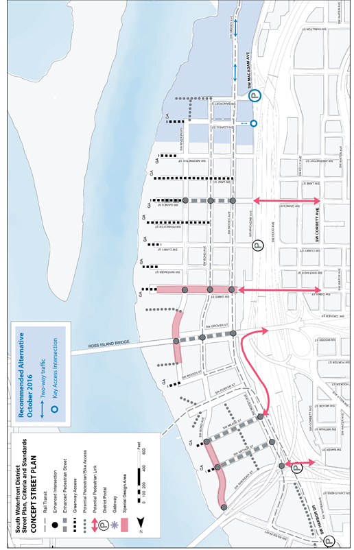
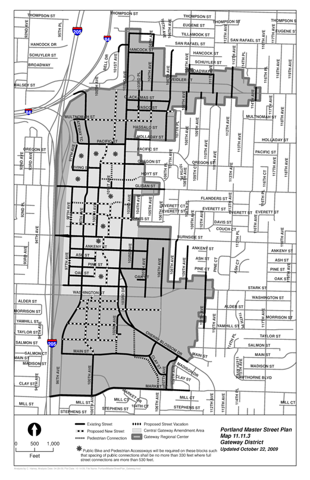
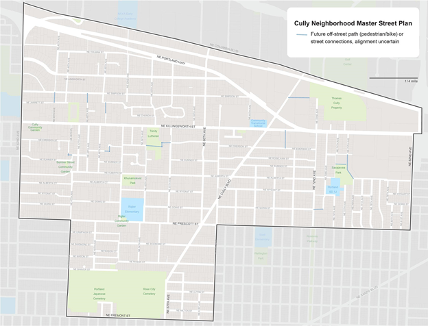
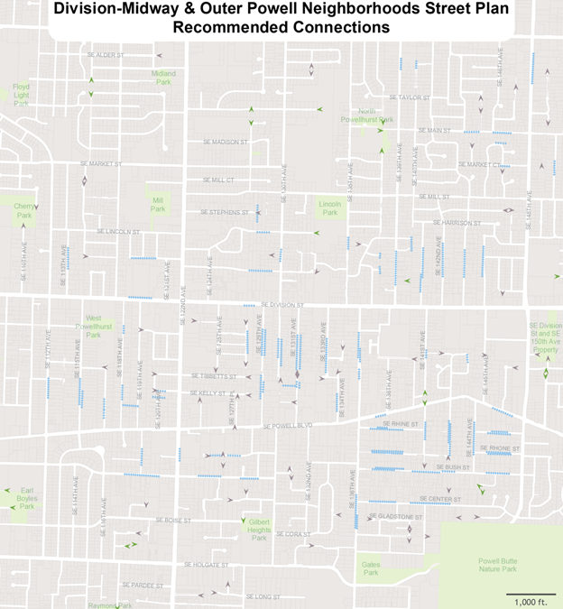
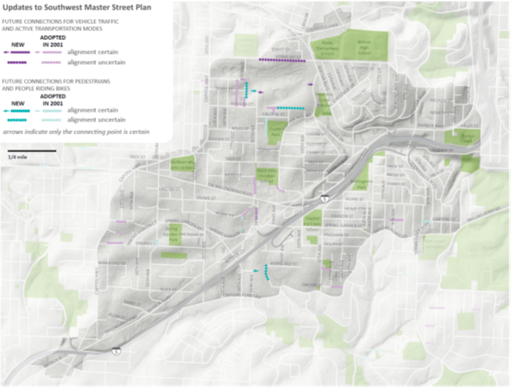

Introduction
Portland is projected to add 140,000 new jobs and 260,000 new residents over the next 20 years. As Portland and the region grow, however, there is a continuing challenge to maintain the natural environment, economic prosperity, and overall quality of life. If in 2035 the percentage of people who drive alone to work remains near 60% as is was in 2015, traffic, carbon emissions, and household spending on vehicles and fuel will all worsen significantly. In order to accommodate this growth, our transportation system must provide Portlanders safer and more convenient ways to walk, bike, and take transit for more trips. The Transportation System Plan is the 20-year plan to guide transportation policies and investments in Portland. The 2035 Transportation System Plan guides investments to maintain and improve the livability of Portland by:
-
saving lives and reducing injuries to all people using our transportation system
-
limiting traffic congestion so transit and freight vehicles can move more reliably
-
reducing carbon emissions and promoting healthy lifestyles
-
keeping more money in the local economy, as we spend less on vehicles and fuel
-
creating great places
The TSP meets state and regional planning requirements and addresses local transportation needs. Transportation planning that promotes active transportation modes is essential to preserving the City’s livability and for the protection of the natural environment Constructing significant amounts of new automobile capacity to accommodate growth is not a desirable option because of the enormous costs and impacts. Adding more streets and parking lots divides neighborhoods, uses valuable land, encourages urban sprawl, and has negative environmental impacts. Alternative approaches, supporting a safer, more affordable and more complete multimodal transportation network must be used to ensure integrated, comprehensive solutions. The first TSP was adopted by Council in 2002 (Ordinance 177028).
The Transportation System Plan helps implement the City’s 2035 Comprehensive Plan in addition to the region’s 2040 Growth Concept by supporting a transportation system that makes it more convenient for people to walk, bicycle, use transit, and drive less to meet their daily needs. The TSP also recognizes that the transportation system must help grow and sustain the City’s economic health by accommodating the needs of businesses and supporting Portland’s role in the international economy.
Why is this important?
The transportation system is essential to the functioning of the city and the well-being and prosperity of the community. It connects people and businesses to goods and services, and links them to the region, state, nation, and world. Although transportation is often measured in terms of mobility, it also creates access to opportunity. The way we build our city has an impact on our mobility and, by extension, our access to opportunity. These goals and policies also reflect the role of transportation planning in reducing carbon emissions and improving public health. Finally, this chapter acknowledges the role that streets can play in providing great civic and recreational spaces.
With its 1980 Comprehensive Plan, the City of Portland became a national leader in the integration of land use and transportation. The 2035 Comprehensive Plan builds on that tradition and adds new innovations. The goals and policies in this chapter increase the focus on complete multimodal transportation systems. The historical emphasis on automobile mobility increasingly creates a cost burden on households and the community as a whole. For the city to successfully meet its transportation system goals for the future, other more affordable choices must be widely available and safe.
What is the Transportation System Plan?
The Transportation System Plan (TSP) is the 20-year plan to guide transportation investments in Portland. The TSP meets state and regional planning requirements and addresses local transportation needs. It includes:
-
Policies that guide the maintenance, development, and implementation of Portland’s transportation system.
-
A list of projects necessary to accommodate 20 years of growth in population and employment, including a financial plan.
-
Master street plans and modal plans.
-
Strategies and regulations for implementation, including street classification maps.
Elements of the TSP — the policies, the projects included in the List of Significant Projects, street classification maps, and street plan maps — are adopted as part of the Comprehensive Plan. The TSP itself is adopted concurrently with the Comprehensive Plan but is published under a separate cover. For ease of use and transparency, the citywide policies from the TSP are also included in this chapter of the Comprehensive Plan.
The TSP also provides more detail than the Comprehensive Plan by including additional sub-policies and area-specific policies, and additional supporting information about transportation system conditions. The TSP contains the transportation element of the City’s Public Facilities Plan. Figure 9-1 — Transportation System Plan: Relationship to Other Policies and Plans illustrates the relationship between the TSP and other policies and plans.
The 2035 TSP includes:
Goals and policies that guide the maintenance, development and implementation of Portland’s transportation system
Objectives that further the implementation of the goals and policies
A list of projects and City wide programs along with a financial plan that will accommodate 20 years of population and employment growth
Master street plans and modal plans
Strategies and regulations for implementation, including street classifications
Elements of the TSP
The goals and policies, street classification descriptions and maps, the financial plan and the master street plan maps in the TSP are adopted as part of the Comprehensive Plan, but published under a separate cover.
For ease of use and transparency, transportation related policies from the 2035 Comprehensive Plan (2015) in Chapter 9 (Transportation), Chapter 3 (Urban Design), Chapter 4 (Development) and Chapter 8 (Public Facilities) are included in the Reference Section (Appendix A). The TSP also includes additional sub-policies, geographic -specific policies, and objectives.**
The TSP is both an implementation tool and a supporting document to the Comprehensive Plan. It contains the transportation element of the City’s Public Facilities Plan, and the List of Significant Projects and Citywide Programs. The TSP also provides more detail than the Comprehensive Plan by including additional supporting information about transportation system conditions.
Transportation System Plan Updates
In order to keep the TSP current and up-to-date with recent transportation planning and development activities, it is updated at regular intervals. The first two updates were not intended to include new policy initiatives. They were primarily technical in nature and included corrections, updates to project descriptions, updates on studies, and inclusion of new master street plans adopted as a part of planning efforts.
The first update was completed and adopted by City Council on October 13, 2004 (effective date, November 12, 2004; Ordinance Nos. 178815 and 178826).
The second update was completed and adopted by City Council on April 5, 2007 (effective date, May 5, 2007; Ordinance No 180871). While primarily technical in nature, this update also included new policy language to implement the City’s Green Street Policy.
The Stage 2 update is a part of the City’s Comprehensive Plan update and changes were made to implement the Comp Plan, as well as reflect adopted plans and classification changes since the last update in 2007. The Stage 3 of the update (2016) will incorporate regional information, update geographic policies and objectives, additional street classification changes, modal plans, other changes as identified, and reformat the document.
REGULATORY FRAMEWORK
The TSP addresses and complies with a number of State and regional goals, policies, and regulations, as summarized below.
State of Oregon
Statewide Planning Goals
Oregon has 19 goals that provide a foundation for the State’s land use planning program. The TSP must comply with all applicable State goals. The two goals directly applicable to the TSP are Goal 11: Public Facilities Plan and Goal 12: Transportation.
Transportation Planning Rule
The Transportation Planning Rule (TPR) implements statewide planning Goal 12: Transportation. The TPR requires State, regional, and local jurisdictions to develop Transportation System Plans (TSPs) that comply with TPR provisions. These provisions include reducing vehicle miles traveled (VMT) per capita by 10 percent over the next 20 years, reducing parking spaces per capita, and improving opportunities for alternatives to the automobile.
Oregon Transportation Plan
The Oregon Transportation Plan (OTP) serves as the State’s TSP. Regional and local TSPs must be consistent with the OTP.
Regional Metro
Regional Transportation Plan
First adopted by Metro in 1983, with latest update in 2014, the Regional Transportation Plan (RTP) serves as the regional TSP. As such, the RTP:
Is consistent with the requirements of the State TPR and OTP
Implements the 2040 Growth Concept and Regional Framework Plan
Focuses on the regional transportation system
Includes multimodal functional classifications and street design classifications
Includes a list of major system improvements
Includes a funding plan
Region 2040 Growth Concept
Metro adopted the 2040 Growth Concept as part of the Regional Urban Growth Goals and Objectives (RUGGOs) in 1995. The 2040 Growth Concept stated the preferred form of long-term regional growth and development, including the urban growth boundary (UGB), density, and open space protection. It also designates design types, such as central city, regional center, town center, and main street.
Regional Transportation Functional Plan
The Regional Transportation Functional Plan (first adopted in 2010, last updated in 2012; Ordinance No 10-1241B) implements the Goals and Objectives in section 2.3 of the RTP and the policies of the RTP, and replaces the regional parking policy of the Urban Growth Management Functional Plan (See RTFP Title 4: Regional Parking Management.) It provides policy basis and direction for local TSPs. The RTFP codifies requirements that local plans must comply with to be consistent with the Regional Transportation Plan. Therefore, its requirements are binding on cities and counties.
Urban Growth Management Functional Plan
Metro adopted the Urban Growth Management Functional Plan (UGMFP) in 1996 and updated it 2014 to implement regional goals and objectives adopted by the Metro Council as the Regional Growth Goals and Objectives (RUGGO), including the 2040 Growth Concept and the Regional Framework Plan. The UGMFP addresses the accommodation of regional population and job growth. Its requirements are binding on cities and counties.
Regional Framework Plan
The Regional Framework Plan, adopted in 1997, identifies regional policies to implement the 2040 Growth Concept, preserving access to nature and building great communities for today and the future. The plan was amended in 2005 and 2010, and again in 2014 as part of the adoption of the Climate Smart Strategy.
City of Portland
Comprehensive Plan
Portland’s 2035 Comprehensive Plan guides land use development and public facility investment decisions between now and 2035. This guidance is intended to help make Portland more prosperous, healthy, equitable and resilient.
The Comprehensive Plan includes five elements that work together to accomplish this goal:
Vision and Guiding Principles
Goals and Policies
Comprehensive Plan Map
List of Significant Projects
Transportation policies, classifications and master street plans
The goals and policies in the TSP convey the City’s intent to:
Create a coordinated, efficient, and more affordable multimodal transportation system.
Make cost-effective investments and system-management decisions that encourage people to choose healthy, active, and low-carbon transportation modes and systems, and enhance the economic competitiveness of the region.
Reduce service disparities and achieve equitable access to all types of facilities and transportation modes.
Ensure safety for users of all transportation modes, with attention to the most vulnerable users, including people with disabilities, those using mobility devices, the young, and the elderly.
Guide the location and design of new street, pedestrian, bicycle, and trail infrastructure.
Direct how and when transportation infrastructure is managed and maintained.
Provide policy guidance for developing and implementing the Transportation System Plan.
Within the Comprehensive Plan and TSP, there are nine Transportation goals:
Safety
Multiple goals
Great places
Environmentally sustainable
Equitable transportation
Positive health outcomes
Opportunities for prosperity
Cost effectiveness
Airport futures
Transportation related policies from the 2035 Comprehensive Plan (2015) are located in Chapter 9 (Transportation), Chapter 3 (Urban Design), Chapter 4 (Development) and Chapter 8 (Public Facilities). The TSP also includes additional sub-policies and geographic -specific policies and objectives.
Chapter 9: Transportation
policies are grouped in these subject areas:
Designing and planning
Land use, development, and placemaking
Streets as public spaces
Modal Policies
Airport Futures
System Management
Transportation Demand Management
Parking Management
Finance, Programs and Coordination
Chapter 8: Public Facilities
Funding
Public Benefits
Public Rights of Way
Trails
Stormwater systems
Chapter 3: Urban Form
Citywide design and development
Centers
Corridors
Transit Station Areas
City Greenways
Employment areas
Pattern Areas
Chapter 4: Development
Design and Development of centers and corridors
Designing with nature
Portland Bureau of Transportation also using Comprehensive Plan Chapter 2: Community Involvement for its public involvement policies.
Chapter 2 has seven goals and 41 policies.
Goals
Community Involvement as a Partnership
Social Justice and Equity
Value Community Wisdom and Participation
Transparency and Accountability
Meaningful Participation
Accessible and Effective Participation
Strong Civic Infrastructure
Chapter 2 policies are grouped in these major areas:
Partners in decision making
Environmental justice
Invest in education and training
Community assessment
Transparency and accountability
Community involvement program
Process design and evaluation
Information design and development
SEVEN OUTCOMES
Working with our partners at Metro, Bureau of Planning and Sustainability, and the Oregon Department of Transportation, with direction from the Portland Plan (2012), the Climate Action Plan (2010), Health Equity & the Transportation System Plan Report (2012), and from the Comprehensive Plan Update, Portland Bureau of Transportation (PBOT) staff developed an outcomes based approach to the TSP.
These seven outcomes directed policy choices as well as informed the development of criteria for selecting and prioritizing TSP Projects and Programs. The Transportation System Improvements Chapter contains details on the citywide project and programs process and evaluation.
These seven outcomes are:
Improve access to daily needs, such as jobs, schools, grocery stores, and health care
Reduce/eliminate transportation fatalities and injuries
Improve health by increasing walking and bicycling
Increase economic benefits, such as access to family wage jobs and freight access
Ensure disadvantaged communities benefit as much or more than non-disadvantaged communities
Reduce global warming pollution from transportation
Prioritize the most cost-effective projects
Master Street Plans
INTRODUCTION
Background
The purpose of the master street plans is to increase the efficiency of the transportation system through increased street connectivity and a finer mesh of pedestrian and bikeways. A dense grid of streets helps spread local vehicle trips more evenly over the local street network and reduces congestion on the arterial system. Studies show that improved local street connectivity improves arterial system capacity by as much as 25 percent.
Studies show that distance is one of the most important factors in mode choice. The lack of a dense grid of streets and pedestrian/bicycle connections results in out-of-direction travel that is particularly discouraging to potential pedestrians and bicyclists. The result is increased use of the automobile for trips to nearby (as the crow flies) destinations. Trips need to be relatively short and direct to encourage travel on foot or by bicycle.
Good street connectivity improves emergency response times. Police, fire, and ambulance services can reach their destinations more quickly because there is less out-of-direction travel. Multiple access routes can reduce travel times and provide access options if one route is blocked.
Good local street connections can reduce traffic volumes on other streets by spreading traffic over a denser network. With more intersections, traffic also moves more slowly because side street traffic and stop signs discourage drivers from speeding.
As properties are subdivided and developed, access needs are met primarily through new streets. The City’s local street network has grown over time, as outlying areas became more urbanized or older areas are redeveloped. In the past, development was not always required to address connections to adjacent areas as well as internal circulation. The result has been large areas of the City with poor connectivity, particularly in newer areas where the counties previously regulated development.
State Requirements
Street connectivity must be part of transportation system plans (TSPs) and adopting Ordinances. The Oregon Administrative Rule for State Land Use Goal 12, Transportation, Section 660-012-0020, Elements of Transportation Systems Plans, requires:
A road plan for a system of arterials and collectors and standards for the layout of local streets and other important non-collector street connections… The standards for the layout of local streets shall provide for safe and convenient bike and pedestrian circulation necessary to carry out OAR 660-012-045(3)(b).
The State Transportation Planning Rule (TPR) states that the intent of the requirement is to provide guidance on the spacing of future extensions and connections along existing and future streets that are needed to provide reasonably direct routes for bicycle and pedestrian travel.
The rule referenced above goes on to state:
On-site facilities shall be provided which accommodate safe and convenient pedestrian and bicycle access from within new subdivisions, multi-family developments, planned developments, shopping centers, and commercial districts to adjacent residential areas and transit stops, and to neighborhood activity centers within one-half mile of the development. Single-family residential developments shall generally include streets and accessways. Pedestrian circulation through parking lots should generally be provided in the form of accessways.
The TPR also states that local jurisdictions should establish their own standards or criteria for providing streets and accessways consistent with the intent stated above. This may be accomplished through standards for spacing of streets or accessways, and standards for excessive out-of-direction travel. The TPR defines ‘safe and convenient’ access as being:
● Reasonably free from hazards
● Meeting the needs of cyclists and pedestrians, considering destination and length of trip
Metro Requirements
The Regional Transportation Functional Plan (RTFP), adopted in 2010 (Ordinance 10-1241B) and updated in 2012, requires jurisdictions to implement two types of street plans:
- Conceptual street plans that:
-
Map contiguous areas of vacant and redevelopable parcels of five or
more acres planned or zoned for residential or mixed-use development
-
Identify appropriate connections to adjacent areas
-
Demonstrate opportunities to extend and connect to existing streets,
provide direct public right-of-way routes, and limit the potential of cul-de-sac and other closed-end street designs
2. A street map for new residential or mixed-use development that will require construction of a new street(s) that:
-
Responds to and expands on the conceptual street plan map
-
Provides for street connections no further apart than 530 feet,
except where prevented by barriers such as topography, railroads, freeways, pre-existing development, or water features where regulations do not allow construction of or prescribe different standards for streets
-
Provides bicycle and/or pedestrian connections when full street
connections are not possible, no further apart than 330 feet, except where prevented by barriers as noted above
-
Limits the use of cul-de-sac or closed street systems
-
Includes street cross-sections
Areas Meeting Connectivity Requirements
Many areas of Portland meet the RTP connectivity standards or are not required to have master street plans. The district maps in Chapter 2 of the TSP (Maps 11.11.9-11.11.16) show these areas. Areas not required to meet connectivity standards include industrial sanctuaries, open space, and protected environmental areas. In Portland these are areas zoned IG1, IG2, IH, OS, and p.
Existing Master Street Plans
Southwest and Far Southeast
The City completed master street plans for the Southwest and Far Southeast transportation districts in June 2001. These two master street plans satisfy the State and regional requirements to identify the location and type of new local street connections. The methodology and criteria used to develop the plans are described briefly below. The SW and Far SE Master Street Plan – Final Report and Recommendations contains quarter-section level maps and tables that detail the recommended connections. The report identifies three objectives to be met:
● Reduce the uncertainty in the development review process regarding when and where new street connections will be an issue.
● Provide for better coordination of the local street system development.
● Comply with the mandates of the State Transportation Planning Rule and Regional Transportation Plan for street connectivity.
The Southwest and Far Southeast master street plans were developed through a number of steps, with mapping associated with each step:
Step One
● Define blocks in the study area that meet the spacing standard.
● Define areas being excluded (areas where streets are complete or underway; parcels zoned as park, open space, or industrial; religious or educational institutions).
Step Two
● Define remaining areas that have development or redevelopment potential (land value greater than improvement value; different Comprehensive Plan and zoning designations; two-acre or larger parcels).
● Define development constraints (street spacing not met, but parcels don’t meet development potential).
Step Three
● Define blocks with barriers to connectivity (environmentally constrained).
*Step Four *
● Group the remaining areas into focus areas.
*Step Five *
● Define locations of new connections.
● Determine specificity of connections – specific points or along a block face).
● Apply type of connection – street or pedestrian/bicycle.
The plan’s recommendations include information about the location, level of alignment specificity, type of connection, barriers, presence of environmental zones, traffic impacts, field notes, and comments from the public or technical staff.
While the master street plans identify a number of future connections, the absence of a connection does not mean a connection is not needed or feasible. All areas within the study areas are still subject to relevant policy and spacing standards.
Area-Specific Master Street Plans
Street plans have been completed, but not adopted into the Comprehensive Plan, for other areas of the City over the past several years. Although they are not specifically intended to meet the
State and regional requirements, they do function as master street plans. These plans cover the following areas:
● Gateway Regional Center
● Airport Way (Columbia Corridor)
● Bridgeton (Northeast district adjacent to Marine Drive)
● South Portland (west end of the Ross Island Bridge)
● South Waterfront (Central City)
● River District (Central City)
● Cully Local Street Plan
● Division-Midway Neighborhood Street Plan
● Tryon-Stephens Headwaters Neighborhood Street Plan
Each plan or study is summarized below, along with maps derived from the original documents.
Areas Not Covered by Master Street Plans
Master Street plans have not been completed for all or parts of the North, Northeast, Far Northeast, Southeast, Northwest, and Central City districts. Other areas were excluded from the Southwest and Far Southeast Master Street Plans: the east light rail corridor (102^nd^ to the city limits, NE Glisan to SE Stark), the Hillsdale town center, and the West Portland town center. Master Street plans for these areas will be completed as refinement plans of the TSP. Until such plans are completed, the location and implementation of new street and pedestrian/bicycle connections will be governed by Title 17: Public Improvements, and Title 33: Planning and Zoning, requirements in City Code. Title 17 regulations govern developing or redeveloping sites that do not include a land division, and Title 33 regulations govern developing or redeveloping sites that do include a land division. The spacing standards in each title are 530 feet for full street connections and 330 feet for pedestrian/bicycle connections where full street connections are not feasible.
SOUTH WATERFRONT DISTRICT STREET PLAN, CRITERIA AND STANDARDS
Background
In 1996, the Portland City Council accepted the City Engineer’s Report titled North Macadam District Street Plan, which identified and classified a street system for the North Macadam District. On January 20, 2003, City Council adopted amendments to the Central City Plan and updated the District’s special design guidelines and the zoning code. At the same time, City Council changed the North Macadam District name to South Waterfront District (the District). By authority of the City Engineer under Title 17 City Code, the South Waterfront Street Plan, Criteria and Standards was amended in 2007 providing updated design criteria and standard details for the District’s public rights-of-way. The 2009 document update amends the North District (the area south of Sheridan St and north of Gibbs St) rights-of-way alignment and standards to accommodate future light rail and property development, as well as expanded streetcar service and bicycle and pedestrian infrastructure.
The South Waterfront District of the Central City of Portland lies along the Willamette River and south of downtown. The district boundaries are the River, Interstate 5, the Marquam Bridge and SW Hamilton Court. Adopted City policy envisions this as a mixed-use neighborhood with significant residential development along the River and commercial development focused along transit corridors. With just over one mile of River frontage the District contains approximately 140 acres. Some land is developed or being developed and some land is vacant land or has redevelopment potential.
The primary development constraint in the District is transportation access to and from regional highway and transit systems. The South Waterfront Plan of January 20, 2003 includes a vision, policies and an Urban Design Plan that promotes high density housing and commercial development with a full range of businesses that contribute to the region’s job growth. The vision also includes frequent public connections to the river, limiting the size and amount of surface parking lots, and integrating development and services.

In 1998 the North Macadam District Street Design Standards and Criteria Plan: Transportation Report considered and analyzed South Waterfront’s limited access and adjacency to I-5 and Ross Island Bridge ramps. The analysis included the three district portal intersections: River Parkway and Harbor Drive (north), Curry and Macadam (center) and Bancroft and Macadam (south). The analysis was based on the District’s 20-year goals for accommodating 10,000 jobs and 3,000 housing units and a 30 percent mode split. The housing goal has since been increased to 5,000 units.
Conclusions were:
● Bancroft and Macadam portal improvements would accommodate traffic growth and transit access at acceptable levels of service. South Waterfront (North Macadam District) became part of the Central City in 1988.
● Moving the central portal from Gibbs to Curry and improving the Curry and Macadam intersection would better accommodate traffic operation, growth and access from I-5 to the District.
● As the District’s growth nears 10,000 jobs and 5,000 housing units, portal access will degrade and as a result function at a marginally acceptable level.
● River Parkway and Harbor Drive would operate at acceptable levels although backups on I-5 and Naito Parkway could interfere with operations on a more frequent basis in the future.
The 1998 transportation analysis demonstrated that while the District will experience increased congestion over time, the portal capacity with the identified portal improvements and increased transit service should continue to provide acceptable levels of service to the District and the regional transportation system.
Since the 1998 report, plans for portal improvements have been altered. Through the South Portal Study, conducted in 2006, the recommended south portal shifted south to Hamilton St and Macadam. In addition, the planned central portal improvements at Curry have been scaled back and north portal improvements at River Parkway and Harbor Drive have been added. In fact, in 2009 the Portland Bureau of Transportation updated the technical analysis through the North Macadam Transportation Development Strategy (resolution no. 36696 adopted April 8, 2009). The report identified multi-modal project priorities and a funding strategy to guide project implementation necessary to support continued development of the urban renewal area, including portal improvements.
The 2007 update of the South Waterfront District Street Plan, Criteria and Standards primarily responded to development in the Central District and completion of infrastructure projects, including the Portland Streetcar extension to Lowell St and the Portland Aerial Tram to Oregon Health Sciences University. Transportation studies, such as the 2004 South Waterfront District Transportation Improvements Evaluation and 2006 South Portal Study had also been completed. Major updates included changes to the street lighting design standards, certain street furniture standards, and the modification of the street plan based on the recommendations of the South Portal Study and the new Greenstreet Policy (resolution no. 36500 adopted in April of 2007). Other changes included modest refinements to various street dimensional standards developed through preliminary engineering and construction of these streets and to refinements of various performance criteria. Overview South Waterfront
2009 Update
Since the 2007 update, the City of Portland has endorsed the locally Preferred Alternative (LPA) for the Portland to Milwaukie Light Rail alignment. This alignment extended light rail south into the North District and include bus service and streetcar utilizing the same alignment. In addition, the OHSU Schnitzer Campus master plan and the North Macadam Transportation Development Strategy report, with a prioritized list of multi-modal projects and a funding strategy, have been completed. These activities generated the need to refine and update various elements of the Street Plan. Major updates include changes to the street alignments and designations in the Concept Street Plan Map, updates of some street widths in the Right-of-Way Width Map changes to street descriptions in the Street Classification and Function Table, and adjustments to the Standard Street Sections.
Specific changes made to the Concept Street Plan map are as follows:
● Bond Ave extends north through the District.
● Bond Ave is one-way northbound through the District.
● Moody Ave is one-way southbound for vehicular traffic through the District; and one-way southbound for streetcar south of Woods St.
● Moody Ave remains two-way streetcar north of Woods St.
● Moody Ave includes a two-way bike path along the west-side to minimize bike/streetcar interactions.
● The grades of Moody Ave and Porter St are raised to a level consistent with the Willamette River Crossing Partnership findings necessary for light rail.
● Porter St carries light rail, streetcar and bus in two directions only; private vehicles are not accommodated on this street.
● River Pkwy (south of the Marquam Bridge) terminates at Woods St.
● Alignments are adjusted for local east-west streets north of Gibbs St.
● “Special Design Area” beneath the Ross Island Bridge has been relocated to reflect the location of the potential active-use park. Grover St is aligned on either side of the Ross Island Bridge.
GATEWAY REGIONAL CENTER STREET PLAN
Background
The 2040 Growth Concept identifies the Gateway regional center as the only regional center in Portland. Planning for Gateway began with the Outer Southeast Community Plan and continued with the Opportunity Gateway Concept Plan and Redevelopment Strategy. City Council accepted Opportunity Gateway in February 2000 (Resolution No. 35867). The Outer Southeast Community Plan resulted in a plan district and transit-supportive zoning
The Central Gateway portion of the Gateway District Master Street Plan was amended in 2009. This amendment was based on a recommendation in the Central Gateway Redevelopment Strategy, which was adopted by the Portland Development Commission in August 2007. The Central Gateway Redevelopment Strategy concluded that the street plan for Central Gateway should be updated, with the goal of increasing connectivity in Central Gateway, providing greater certainty to developers about street requirements and opening up parcels to redevelopment.
Street Connectivity
A discontinuous network of streets and sidewalks, high volumes of through-traffic, and underutilized property characterize Gateway regional center. Access to the transit stations in Gateway’s northwest corner and at 102^nd^ and Burnside is problematic. Discontinuous streets discourage walking and bicycling, resulting in significant out-of-direction travel for all modes.
Increasing street connectivity would disperse trips among many alternate routes, thereby reducing congestion, shortening trip lengths, and increasing the mode split for alternatives to the automobile.
Concept Plan Map
The Opportunity Gateway Concept Plan and Redevelopment Strategy is intended to serve as the ‘appropriate vision’ for the redevelopment of Gateway as a regional center. The concept plan map is a picture of the regional center’s redevelopment potential and build-out in 2019. While the plan map affixes buildings and parks to specific locations, the reality is that new construction will appear somewhat differently. While new streets and connections are identified, they are also subject to change to respond to development opportunities. The Opportunity Gateway report states: “It is rigid enough to be a statement of what is and is not desirable in the
Regional Center, and flexible enough to be useful even as redevelopment circumstances change.” The map graphically depicts the vision described in the report.
The concept plan map calls for a traditional block configuration, which will help unify the regional center’s character. Some of the proposed new connections would greatly change existing circulation patterns. Northeast Multnomah between Fred Meyer’s and Mervyn’s at the Gateway Shopping Center is shown as a fully functional street, intended to help disperse traffic associated with the transit center. In the southern part of the regional center, several new public streets are shown in the Mall 205 and Plaza 205 properties, breaking up what are now large expanses of parking. Pedestrian pathways connect important routes and destinations where full streets are not possible or appropriate, such as between SE 105^th^ and the Adventist Medical Center.
As the major north-south arterial, 102^nd^ Avenue is the spine of the district and is targeted for improvements for all modes. Changes to 99^th^ Avenue would allow it to act as an additional north-south carrier, improving access for development projects and creating a new local identity the length of the district. Major east-west streets (Stark/Washington, Halsey/Weidler, Burnside, and Glisan) will continue to carry significant volumes of through-traffic. Better local north-south street connections will link the two main large shopping areas together, and improved connectivity will be provided within each of these shopping areas.
{:width="5.427083333333333in" height=“8.385416666666666in”}
Central Gateway Street Plan 2009
The Central Gateway Master Street Plan revision was developed to provide flexibility for connections while maintaining larger parcels for redevelopment, recognizing existing parcel lines, provide connections on the local network without altering the district or neighborhood collectors and to foster redevelopment in the City’s only regional Center. Criteria was established for consideration in the proposed plan. Other goals of the plan included aligning streets on parcel boundaries for shared investment in right-of-way improvements; consider common or multiple parcel ownership; minimize parcel impacts and maintain reminder parcels; preserve some large parcels or contiguous ownership parcels; discourage cut-through traffic while providing access; discourage off-set intersections; consider potential spacing of crosswalks or signals.
With these criteria and goals, a revised street plan for Central Gateway was developed. The revised street plan provided needed multi-modal connections within the Central Gateway area without changing the function of the major traffic streets and collectors surrounding the area, such as 102nd Ave., Glisan, Burnside, and Stark.
Characteristics of the revised street plan:
East-west connections between 97th Ave. and 102nd Ave. on Flanders St. and Davis St. North-south connection on 100th Ave. between Oak St. and Burnside and also between Oregon St. and Pacific St.
North–south connection on 101st Ave. between Stark St. and approximately Flanders St., improving multi-modal access to the light-rail station on 102nd and Burnside.
Internal connection on Oregon St. approximately Hoyt St., Coach St., and 101st Ave.
Vacating portions of 97th Ave. to allow developable parcels near I-205. This would continue to allow multi-modal access to the parcels.
Maintaining existing large parcels for development and redevelopment while also providing public bicycle and pedestrian access ways. Large parcels would have the option to have public bike and pedestrian access ways on the site rather than full streets, as was required in the prior master street plan. Public bike and pedestrian access ways will be required on certain blocks such that spacing of public connections shall be no more than 330 feet where full street connections are more than 530 feet. Additionally, pedestrian connections would be required throughout Central Gateway.
Because large parcels were maintained for development and redevelopment, the revised street plan does not include some of the proposed streets that were in the previous in the street plan for the Gateway District. These include:
Extension of Oregon St. between 97th Ave. and 98th Ave. However, the revised street plan proposes to keep the Irving St. alignment as existing between 97th Ave. and 100th Ave., whereas the prior plan showed this segment as vacated.
Full street connection of Hoyt St. between 97th Ave. and 104th Ave.
Full street connection of roughly the Davis St. alignment between 97th Ave. and 103rd Ave. The revised street plan proposes that some portions of the alignment would be full street while other portions would be pedestrian connection.
Extension of 101st Ave. between Washington St. and Pacific St. The revised street plan proposes a mix of full streets and pedestrian connections on some portions of the 101st Ave. alignment. Other portions of the alignment would not have connections. Unlike as in the prior plan, the revised street plan does not intend for 10st Ave. to become a neighborhood collector. Rather, 99th Ave. would be a through street, with 100th Ave. also providing significant connectivity.)
Extension of 100th Ave. between Oak St. and Washington St. (The revised street plan does not include any connectivity at this location. Vehicles, pedestrians, and bicycles could access the area from connections at 97th Ave., and 101st.
Cully Neighborhood Local Street Plan (2012)
The Cully Commercial Corridor and Local Street Plan was adopted by Resolution 36952 in August 2012. Its development was funded by a Transportation Growth Management Grant from the Oregon Department of Transportation. Its recommendations were also influenced by the Portland Plan (April 2012) which had recommendations related to alternative right of way improvements, developing new options for unimproved rights-of-way and accelerating the creation of safe pedestrian connections. The Cully Neighborhood Local Street Plan identified new street or pedestrian/bicycle connections to improve street connectivity and address gaps in transportation networks.

FAR SOUTHEAST PORTLAND MASTER STREET PLAN
Study Area
The Far Southeast Portland Master Street Plan includes nearly all of the Far Southeast Transportation District, from I-205 east to the City limit, and from Burnside south to the City limits. Some portions of this area are excluded from the plan: the Gateway regional center because a street plan already exists, and Burnside light rail station areas (102^nd^ to 162^nd^,
NE Glisan to SE Stark), where master street plans will be completed as part of TSP refinement plans.
Land Use
The Far Southeast is predominantly in residential use, with interspersed commercial/retail uses. Commercial/retail uses are located in strip commercial development along arterials such as 122^nd^ and Division or in malls such as Mall 205 or the San Rafael Shopping Center. Institutions, such as colleges, hospitals, and schools, can create barriers, but offer limited opportunities for street connections. Cemeteries and parks also occupy significant tracts of land in the district. There are only a few pockets of industrial uses, principally near the Lents town center.
Zoning
The Far Southeast Master Street Plan Study area includes virtually all of the various City commercial zones, except some designed specifically for the Central City. The area includes nearly all the residential zones, excluding only the most dense zones. The employment and industrial zoning currently in place is confined primarily to the southern edge of the district. Significant tracts of open space zoning exist, with Powell Butte the largest. Environmental overlays are applied to areas with steep slopes and near streams and wetland areas, principally in the southeast portion of the district.
Area Character
Terrain and the density of development largely determine the area’s character. Some less developed areas display a rural appearance, with open fields and large out-buildings. The majority of the district has a more suburban appearance, with large tracts of single-dwelling homes on medium to large lots. Some areas display a more urban character, with smaller lots and buildings closer to the street. Steep slopes with numerous streams and gullies are located in the southern portion of the area, along Johnson Creek and in Pleasant Valley.
Long-term county stewardship, along with recent population growth, has resulted in relatively few public streets in some areas, and large redevelopable parcels of land. Many of the area’s local service streets and collectors are not fully improved. The lack of sidewalks results in a street system that is not particularly pedestrian friendly. The lack of public streets contributes significantly to out-of-direction travel patterns, and very wide major arterials carry many local trips as well as through-trips.
Issues and Constraints
Barriers (such as terrain, streams, and existing development) will continue to limit a connected street system, including bicycle/pedestrian accessways, in Far Southeast Portland. With expected increases in the number of households and dwelling units in the area, however, completion of the local street system will be needed even more to provide multimodal access to areas of new development and from those areas to neighborhood activity centers, transit, and arterials.
Outer Powell Blvd Conceptual Plan Design (2012)
The City of Portland Bureau of Transportation, in coordination with the Oregon Department of Transportation (ODOT), developed a conceptual design plan for Outer SE Powell Blvd. from the I-205 to SE 174th Ave (city limits). This stretch of SE Powell Blvd is designated State Highway No. 26. Therefore, ODOT has jurisdiction along SE Powell Blvd.
The plan addressed the needs for Outer Powell Blvd in a 20-year time frame. The plan identified improvements and right-of-way width needs that will allow Outer SE Powell Blvd to serve vehicle traffic movement while also improving the safety, accessibility and the aesthetic environment for pedestrians, cyclists and transit riders. The Outer Powell Blvd Conceptual Plan Design was adopted by Resolution 36931 in February 2013.
A component of the plan was improving local connectivity around Powell Blvd. A Local Streets and Access-ways Report identified additional connections in the area.
Six types of connections were identified in the Local Streets and Accessways Report.
Separated In-Roadway Bicycle Facilities. Facilities that separate the bicycle travel lane from the motor vehicle lane with striping or a physical barrier. Examples are a standard bike lane, buffered bike lane, and cycle track.
Bicycle Boulevards/Advisory Bike Lanes. Facilities on low traffic volume streets where through movements of bicycles is given priority over motor vehicles Advisory bike lanes include dashed bike lane striping and single motor vehicle lane. Vehicles are allowed to enter bike lanes to pass each other.
Pedestrian and Bicycle Pathways. These facilities are outside of the roadway right-of way and fully separated from the roadway.
Street Connections. New local streets built to City standards. Sidewalks accommodate pedestrian travel and bike travel share the roadway with vehicles.
Pedestrian and Bicycle Crossings. Two types of crossings were identified. The first type is provided by the existing traffic signals. New signals were not recommended. The second crossing type is shown at generally desired locations between signalized intersections. Specific design treatments were not determined (e.g. pedestrian refuge island, HAWK signal, etc.)
Potential Street Realignment. Opportunities to realign existing streets through future redevelopment. The objective is to align intersections on opposite sides of Powell Boulevard to improve pedestrian crossings or access to transit stops.
Division-Midway Neighborhood Street Plan (Adopted by Resolution No. 37157 October 15, 2015)
The Portland Bureau of Transportation (PBOT), in partnership with the Portland Bureau of Planning and Sustainability and Oregon Department of Transportation (ODOT), developed the Division-Midway Neighborhood Street Plan. The Division-Midway Neighborhood Street Plan was developed to help improve local street and pathway connectivity in several East Portland neighborhoods. The project area is centered on SE Division Street, a designated “Main Street” in the Metro Region 2040 Growth Concept Plan and the study area was bounded by SE 112th Ave, SE 148th Ave, SE Stark and SE Holgate and includes portions of the Hazelwood, Mill Park, Centennial and Powellhurst Gilbert neighborhoods.
Goals and Objectives: The overall goal is to develop a Neighborhood Street Plan that can better increase street connectivity and multi-modal travel options within the project area. Objectives:
● Establish a more connected local street and path network
● Create safer walking and bicycling routes to neighborhood destinations, transit and the regionally designated SE Division Main Street
● Define the range of options for improving local streets, including use of Portland Street By Street design options.
● Inform future improvements to be built over-time by property owners, developers and the City.
The Street Plan identified implementation methods for introducing new street and pathway connections and options for improving deficient local streets. The plan recommended adding New Future Public Connections across Existing Private Property.

Tryon-Stephens Headwaters Neighborhood Street Plan
(Adopted by Resolution No. 37162, November 2015)
The Portland Bureau of Transportation (PBOT) and the Portland Bureau of Environmental Services (BES) developed the Tryon-Stephens Headwaters Neighborhood Street Plan to create a strategy to complete the transportation network and stormwater system within the study area. The Tryon-Stephens plan provides a strategy for enhancing neighborhood access to local destinations by looking comprehensively at street and drainage issues. The Tryon-Stephens Street Plan sets a framework for tailoring improvements to individual streets based on the adjacent land use, street character, and natural setting.
The plan recommends modifying the City of Portland’s Southwest Master Street Plan (2001) to add future local street/pathway connections in two locations within the study area, as shown on the following map (page 52 of the Tryon-Stevens plan). Recommended new connections are in the Hillsdale neighborhood linking SW Nevada Court to SW Vermont Street between SW 26th Avenue and Capitol Hill Road, and in the Markham Neighborhood linking SW Marigold Street between SW 23rd and SW 26th Avenues.

IN ADDITION THE TSP RETAINS THE FOLLOWING ADOPTED MASTER STREET PLANS
Bridgeton Neighborhood Street Plan
Airport Way Street Plan
River District Street Plan
Southwest District Master Street Plan
South Portland Circulation Study
St. Johns Town Center Master Street Plan
**Multnomah County Unincorporated Urban Pockets **
Transportation Objectives
The objectives contained within the TSP offer further details to support the Comp Plan Goals and Policies. Objectives are specific statements that implement, and help assess incremental progress towards, the goals and policies. Some objectives contained within the TSP are required for compliance with State and Regional goals, policies and regulations.
**Objective 9.1 Community Involvement (formerly Objective 6.1-6.2) **
9.1.a. The Portland Bureau of Transportation (PBOT) will provide meaningful opportunities for equitable community involvement in shaping the plans, public policy and projects that support implementation of the Transportation System Plan.
9.1.b. Provide and document concerted efforts to engage those with the potential to be impacted by the plans, public policies or projects in order to evaluate and mitigate disparate burdens, especially for under-served and under-represented communities including Limited English Proficient (LEP) communities, communities of color, low-income populations and those traditionally underserved by transportation services.
9.1.c. Furnish opportunities for early and ongoing access to balanced information about plans, public policy and projects.
9.1.d. Keep interested parties, and those who may be impacted by particular decisions related to plan and project implementation, informed of direct and related engagement opportunities.
9.1.e. Engage and support community members who are traditionally under-represented in bureau projects, plans, and processes.
9.1.f. Provide funding that is adequate to carry out equity driven public involvement best practices.
9.1.g. Foster a culture of equitable public involvement across all divisions within PBOT.
9.1.h. Ensure PBOT decision-making processes are clear, straightforward, and include mechanisms for public accountability, so that the public has the capacity to participate.
9.1.i. Ensure PBOT public documents are accessible, relevant, and informative.
9.1.j. Ensure public involvement and outreach practices, materials, and processes are culturally relevant.
9.1.k. Follow International Association for Public Participation (IAP2) Core Values.
9.1.l. Follow City of Portland Public Involvement Principles.
9.1.m. Follow Internal PBOT Public Involvement Policies.
9.1.n. Follow City of Portland Civil Rights Title VI Plan.
9.1.o. Follow the goals and policies of Chapter 2: Community Involvement of the City’s Comprehensive Plan.
9.1.p. Follow Policy 8.6 Interagency Coordination from Chapter 8: Public Facilities and Services of the City’s Comprehensive Plan.
9.1.q. Refer to the Bureau of Planning and Sustainability Public Engagement Workbook for guidance on scoping for potential community impacts, identifying stakeholders, determining the right level of engagement, planning a community engagement process, tracking engagement, reporting results and evaluating the engagement and process.
9.1.r. Consider tools and strategies offered by Metro’s Public Engagement Guide in Portland’s transportation planning activities.
9.1.s. Foster consistency in community engagement approaches and implementation across the Bureau of Transportation.
Objective 9.2 Street Classification Descriptions (formerly Objective 6.4)
9.2.a. Classification descriptions and designations are used to determine the appropriateness of street improvements and to make recommendations on new and expanding land uses through the land use review processes.
9.2.b. Classification descriptions are used to describe how streets should function for each mode of travel, not necessarily how they are functioning at present.
9.2.c. All of a street’s classifications must be considered in designing street improvements and allocating funding. While a proposed project may serve only one classification, improvements should not preclude future modifications to accommodate other classifications of the street.
9.2.d. When the existing use of a street does not comply with its classification, no additional investments should be made that encourage that inappropriate use.
9.2.e. Designate new streets within a land division site as Local Service Streets for all modes unless otherwise designated through a concurrent or subsequent Comprehensive Plan amendment to the Transportation Element.
9.2.f. Designate new streets within Pedestrian Districts and Freight Districts as Local Service Streets unless otherwise designated through a Comprehensive Plan amendment to the Transportation Element.
Objective 9.3 Traffic Classification Descriptions (formerly Objective 6.5)
9.3.a. Regional Trafficways serve interregional district movement that has only one trip end in a transportation district or to serve trips that bypass a district completely.
-
Land Use/Development. Regional Trafficways should serve the Central City, regional centers, industrial areas, and intermodal facilities and should connect key freight routes within the region to points outside the region. Encourage private and public development of regional significance to locate adjacent to Regional Trafficway interchanges.
-
Connections. Regional Trafficways should connect to other Regional Trafficways, Major City Traffic Streets, and District Collectors. A ramp that connects to a Regional Trafficway is classified as a Regional Trafficway from its point of connection up to its intersection with a lower-classified street.
-
Buffering. Adjacent neighborhoods should be buffered from the impacts of Regional Trafficways.
-
Dual Classification. A street with dual Regional Trafficway and Major City Traffic Street classifications should retain the operational characteristics of a Major City Traffic Street and respond to adjacent land uses.
9.3.b. Major City Traffic Streets serve as the principal routes for traffic that has at least one trip end within a transportation district.
-
Land Use/Development. Major City Traffic Streets should provide motor vehicle connections among the Central City, regional centers, town centers, industrial areas, and intermodal facilities. Auto-oriented development should locate adjacent to Major City Traffic Streets, but should orient to pedestrians along streets also classified as Transit Streets or within Pedestrian Districts.
-
Connections. Major City Traffic Streets should serve as primary connections to Regional Trafficways and serve major activity centers in each district. Traffic with no trip ends within a transportation district should be discouraged from using Major City Traffic Streets.
-
On-Street Parking. On-street parking may be removed and additional right-of-way purchased to provide adequate traffic access when consistent with the street design designation of the street. Evaluate the need for on-street parking to serve adjacent land uses and improve the safety of pedestrians and bicyclists when making changes to the roadway.
9.3.c. Traffic Access Streets provide access to Central City destinations, distribute traffic within a Central City district, provide connections between Central City districts, and distribute traffic from Regional Trafficways and Major City Traffic Streets for access within the district. Traffic Access Streets are not intended for through-traffic with no trip ends in the district.
-
Land Use/Development. Traffic Access Streets serve Central City land uses. Solutions to congestion problems on Traffic Access Streets must accommodate the high-density pattern desired in the Central City.
-
Connections. Connections to adjoining transportation districts should be to District or Neighborhood Collectors. Intersections of Traffic Access Streets and streets with higher or similar classifications should be signalized, where warranted, to facilitate the safe movement of traffic along each street as well as turning movements from one street to the other.
-
Access. Reduction in motor vehicle congestion is given less priority than: supporting pedestrian access and enhancing the pedestrian environment; maintaining on-street parking to support land uses; accommodating transit; or accommodating bicycles. Access to off-street parking is allowed.
-
Right-of-way Acquisition. Acquisition of additional right-of-way to reduce congestion is discouraged.
9.3.d. District Collectors serve as distributors of traffic from Major City Traffic Streets to streets of the same or lower classification. District Collectors serve trips that both start and end within a district.
-
Land Use/Development. District Collectors generally connect town centers, corridors, main streets, and neighborhoods to nearby regional centers and other major destinations. Land uses that attract trips from the surrounding neighborhoods or from throughout the district should be encouraged to locate on District Collectors. Regional attractors of traffic should be discouraged from locating on District Collectors.
-
Connections. District Collectors should connect to Major City Traffic Streets, other collectors, and local streets and, where necessary, to Regional Trafficways.
-
On-Street Parking. Removal of on-street parking and right-of-way acquisition should be discouraged on District Collectors, except at specific problem locations to accommodate the equally important functions of traffic movement and vehicle access to abutting properties.
9.3.e. Neighborhood Collectors serve as distributors of traffic from Major City Traffic Streets or District Collectors to Local Service Streets and to serve trips that both start and end within areas bounded by Major City Traffic Streets and District Collectors.
-
Land Use/Development. Neighborhood Collectors should connect neighborhoods to nearby centers, corridors, station communities, main streets, and other nearby destinations. New land uses and major expansions of land uses that attract a significant volume of traffic from outside the neighborhood should be discouraged from locating on Neighborhood Collectors.
-
Connections. Neighborhood Collectors should connect to Major City Traffic Streets, District Collectors, and other Neighborhood Collectors, as well as to Local Service Streets.
-
Function. The design of Neighborhood Collectors may vary over their length as the land use character changes from primarily commercial to primarily residential. Some Neighborhood Collectors may have a regional function, either alone or in concert with other nearby parallel collectors. All Neighborhood Collectors should be designed to operate as neighborhood streets rather than as regional arterials.
-
On-Street Parking. The removal of on-street parking and right-of-way acquisition should be discouraged on Neighborhood Collectors.
9.3.f. Local Service Traffic Streets distribute local traffic and provide access to local residences or commercial uses.
-
Land Use/Development. Discourage auto-oriented land uses from using Local Service Traffic Streets as their primary access.
-
Classification. Streets not classified as Regional Trafficways, Major City Traffic Streets, District Collectors, or Neighborhood Collectors are classified as Local Service Traffic Streets.
-
Connections. Local Service Traffic Streets should connect neighborhoods, provide local circulation, and provide access to nearby centers, corridors, station areas, and main streets.
-
Function. Local Service Traffic Streets provide local circulation for traffic, pedestrians, and bicyclists and (except in special circumstances) should provide on-street parking. In some instances, where vehicle speeds and volumes are very low (for example, woonerfs and accessways), Local Service Traffic Streets may accommodate both vehicles and pedestrians and bicyclists in a shared space.
Objective 9.4 Transit Classification Descriptions (formerly Objective 6.6)
9.4.a. Regional Transitways provide for interregional and interdistrict transit trips with frequent, high speed, high-capacity, express, or limited service, and to connect the Central City with all regional centers.
-
Land Use. Development with a regional attraction (e.g., shopping centers, arenas) are encouraged to locate adjacent to Regional Transitways to reduce traffic impacts on adjoining areas and streets. Locate high-density development within a half-mile of transit stations on Regional Transitways, with the highest densities closest to the stations.
-
Access to Transit. Transit stations should be designed to accommodate a high level of multimodal access within a half-mile radius of the station. Use feeder bus service to access Regional Transit stations. Use park-and-ride facilities to access Regional Transit stations only at ends of Regional Transitways or where adequate feeder bus service is not feasible.
-
Improvements. Use transit-preferential treatments to facilitate light rail and bus operations. Consider the use of access management measures to reduce conflicts between transit vehicles and other vehicles. Where compatible with adjacent land uses, right-of-way acquisition or parking removal may occur to accommodate transit-preferential measures and improve access to transit.
-
Transfer Points. Provide safe and convenient transfer points with covered waiting areas with transit route information, benches, trash receptacles, enhanced signing, lighting, and telephones.
-
Bus Stops. Buses providing local service along Regional Transitways should have more frequent stop spacing, similar to stop spacing along Major Transit Priority Streets.
-
Dual Classification. A street with a dual Regional Transitway and Major Transit Priority Street classifications should retain the operational characteristics of a Major Transit Priority Street and respond to adjacent land uses.
-
Connections. A ramp that connects to a Regional Transitway is classified as a Regional Transitway up to its intersection with a lower-classified street.
9.4.b. Major Transit Priority Streets provide for high-quality transit service that connects the Central City and other regional and town centers and main streets.
-
Land Use. Transit-oriented land uses should be encouraged to locate along Major Transit Priority Streets, especially in centers. Discourage auto-oriented development from locating on a Major Transit Priority Street, except where the street is outside the Central City, regional or town center, station community, or main street and is also classified as a Major City Traffic Street. Support land use densities that vary directly with the existing and planned capacity of transit service.
-
Access to Transit. Provide safe and convenient access for pedestrians and bicyclists to, across, and along Major Transit Priority Streets.
-
Improvements. Employ transit-preferential measures, such as signal priority and bypass lanes. Where compatible with adjacent land use designations, right-of-way acquisition or parking removal may occur to accommodate transit-preferential measures or improve access to transit. The use of access management should be considered where needed to reduce conflicts between transit vehicles and other vehicles.
-
Transfer Points. Provide safe and convenient transfer points with covered waiting areas, transit route information, benches, trash receptacles, enhanced signing, lighting, and telephones. Limited transit service should stop at transfer points and activity centers along Major Transit Priority Streets.
-
Dual Classification. Streets with dual Regional Transitway and Major Transit Priority Street classifications should retain the operational characteristics of Major Transit Priority Streets, and development should orient to the street.
-
Bus Stops. Locate bus stops to provide convenient access to neighborhoods and commercial centers. Stops should be located relatively close together in high-density and medium-density areas, including regional and town centers and along most main streets, and relatively farther apart in lower-density areas. Passenger amenities should include shelters and route information.
9.4.c. Transit Access Streets are intended for district-oriented transit service serving main streets, neighborhoods, and commercial, industrial, and employment areas.
-
Land Use. Encourage pedestrian- and transit-oriented development in commercial, institutional, and mixed-use areas along Transit Access Streets.
-
Access to Transit. Provide safe and convenient pedestrian and bicycle access to transfer points and stops and along Transit Access Streets.
-
Transfer Points. Provide bus shelters, safe and convenient pedestrian crossings, and transit information at transfer points.
-
Improvements. Employ transit-preferential measures at specific intersections to facilitate bus operations where there are significant bus delays. Applicable preferential treatments include signal priority, queue jump lanes, and curb extensions.
-
Bus Stops. Locate stops closer together in neighborhood commercial areas and somewhat farther apart in other areas along Transit Access Streets. Passenger amenities, including covered waiting areas, are appropriate along Transit Access Streets.
9.4.d. Community Transit Streets serve neighborhoods and industrial areas and connect to citywide transit service.
-
Land Use. Encourage pedestrian- and transit-oriented development in commercial, institutional, and mixed-use areas along Community Transit Streets.
-
Transit Service. Community Transit Streets typically carry feeder bus service, mini-bus, or demand-responsive services. Demand-responsive service may include service that is tailored to areas (e.g., industrial areas) that have unusual transit service needs. The size and type of transit vehicle should be appropriate to the needs of the land uses served.
-
Pedestrian and Bicycle Access. Provide safe and convenient pedestrian and bicycle access along Community Transit Streets and to transfer points and stops.
-
Improvements. Community Transit Streets are typically used for access by bicyclists, pedestrians, and drivers to reach neighborhood destinations. Parking removal or the acquisition of additional right-of-way should not be undertaken to enhance transit service on Community Transit Streets, except at specific locations to correct unsafe transit operations or accommodate access to transit.
-
Transfer Points. Provide covered waiting areas and transit information at transfer points.
-
Bus Stops. Locate stops closer together in neighborhood commercial areas and farther apart in other areas along Community Transit Streets.
9.4.e. Local Service Transit Streets provide transit service to nearby residents and adjacent commercial areas.
-
Land Use. Transit operations on Local Service Transit Streets should give preference to access for individual properties and to the specific needs of property owners and residents along the street.
-
Classification. Streets not classified as Regional Transitways, Major Transit Priority Streets, Transit Access Streets, or Community Transit Streets are classified as Local Service Transit Streets.
-
Function. Local Service Transit Streets may be used for paratransit service, end loops for regularly scheduled routes, and may carry school buses.
-
Bus Stops. Locate stops along Local Service Transit Streets based on Tri-Met service standards.
9.4.f. Transit Stations are locations where light rail vehicles or other high-capacity transit vehicles stop to board and unload passengers.
-
Locations. Locate Transit Stations on Regional Transitways to provide direct and convenient service to regional and town centers and major trip generators along the transitway. Station locations are conceptual. Actual locations should be used for regulatory purposes such as measuring distances.
-
Passenger Facilities. Provide safe and convenient covered waiting areas and easy transfer to other transit services. Provide transit information and access for pedestrians and bicyclists. Transit Stations should have a full range of passenger services, including route information, benches, secure bicycle parking, trash receptacles, enhanced signing, lighting, and telephones.
-
Transit Station Spacing. Place Transit Stations along Regional Transitways with light rail service or other high-capacity transit service at intervals of approximately one-half mile. In high-density areas in the Central City, consider closer station spacing of three to four blocks.
9.4.g. Intercity Passenger Rail provides commuter and other rail passenger service.
- Station Spacing. Stations are typically located one or more miles apart, depending on overall route length.
9.4.h. Passenger Intermodal Facilities serve as the hub for various passenger modes and the transfer point between modes.
- Connections. Passenger Intermodal Facilities connect inter-urban passenger service with urban public transportation service and are highly accessible by all modes.
**Objective 9.5 Bicycle Classification Descriptions (formerly Objective
6.7)
**
9.5.a. Major City Bikeways form the backbone of the city’s bikeway network and are intended to serve high volumes of bicycle traffic and provide direct, seamless, efficient travel across and between transportation districts.
-
Land Use. Major City Bikeways should support 2040 land use types.
-
Improvements. Major City Bikeways should be designed to accommodate large volumes of bicyclists, to maximize their comfort and to minimize delays by emphasizing the movement of bicycles. Build the highest quality bikeway facilities. Motor vehicle lanes and on-street parking may be removed on Major City Bikeways to provide needed width for separated-in-roadway facilities where compatible with adjacent land uses and only after performing careful analysis to determine potential impacts to the essential movement of all modes. Where improvements to the bicycling environment are needed but the ability to reallocate road space is limited, consider alternative approaches that include property acquisition, or dedication, parallel routes and/or less desirable facilities. On Major City Bikeways developed as shared roadways, use all appropriate tools to achieve recommended performance guidelines. Where conditions warrant and where practical, Major City Bikeways should have separated facilities for bicycles and pedestrians.
9.5.b. City Bikeways establish direct and convenient bicycle access to significant destinations, to provide convenient access to Major City Bikeways and to provide coverage within three city blocks of any given point.
-
Land Use. City Bikeways should support 2040 land use types and residential neighborhoods.
-
Improvements. City Bikeways emphasize the movement of bicycles. Build the highest quality
bikeway facilities. Motor vehicle lanes and on-street parking may be removed on City Bikeways to provide needed width for separated-in-roadway facilities where compatible with adjacent land uses and only after taking into consideration the essential movement of all modes. Where improvements to the bicycling environment are needed but the ability to reallocate road space is limited, consider alternative approaches that include property acquisition, or dedication, parallel routes and/or less desirable facilities. On City Bikeways developed as shared roadways, use all appropriate tools to achieve recommended performance guidelines.
9.5.c. Local Service Bikeways serve local circulation needs for bicyclists and provide access to adjacent properties.
-
Classification. All streets not classified as City Bikeways or Major City Bikeways with the exception of Regional Trafficways not also classified as Major City Traffic Streets, are classified as Local Service Bikeways.
-
Improvements. Consider the following design treatments for Local Service Bikeways: shared roadways, traffic calming, bicycle lanes, and extra-wide curb lanes. Crossings of Local Service Bikeways with other rights-of-way should minimize conflicts.
-
On-Street Parking. On-street parking on Local Service Bikeways should not be removed to provide bicycle lanes.
-
Operation. Treatment of Local Service Bikeways should not have a side effect of creating, accommodating, or encouraging automobile through-traffic.
9.5.d. Bicycle Districts are areas with a dense concentration of commercial, cultural, institutional and/or recreational destinations where the City intends to make bicycle travel more attractive than driving.
-
Land Use. High density and mixed-use neighborhoods should be targeted as bicycle districts. Auto-oriented development should be discouraged in Bicycle Districts.
-
Characteristics. The size and configuration of a Bicycle District should be consistent with the scale of bicycling trips. A Bicycle District includes the streets along its boundaries, except where the abutting street is classified as a Regional Trafficway.
-
Improvements. All streets within a Bicycle District are important in serving bicycle trips. Appropriate bicycle facilities should be determined for each street based on the desired bicycling conditions and operations. Use the bikeway design and engineering guidelines to design streets within Bicycle Districts.
Objective 9.6 Pedestrian Classification Descriptions (formerly Objective 6.8)
9.6.a. Pedestrian Districts give priority to pedestrian access in areas where high levels of pedestrian activity exist or are planned, including the Central City, Gateway regional center, town centers, and station communities.
-
Land Use. Zoning should allow a transit-supportive density of residential and commercial uses that support lively and intensive pedestrian activity. Auto-oriented development should be discouraged in Pedestrian Districts. Institutional campuses that generate high levels of pedestrian activity may be included in Pedestrian Districts. Exceptions to the density and zoning criteria may be appropriate in some designated historic districts with a strong pedestrian orientation.
-
Streets within a District. Make walking the mode of choice for all trips within a Pedestrian District. All streets within a Pedestrian District are equal in importance in serving pedestrian trips and should have sidewalks on both sides.
-
Characteristics. The size and configuration of a Pedestrian District should be consistent with the scale of walking trips. A Pedestrian District includes both sides of the streets along its boundaries, except where the abutting street is classified as a Regional Trafficway. In these instances, the land up to the Regional Trafficway is considered part of the Pedestrian District, but the Regional Trafficway itself is not.
-
Access to Transit. A Pedestrian District should have, or be planned to have, frequent transit service and convenient access to transit stops.
-
Improvements. Use the Pedestrian Design Guide to design streets within Pedestrian Districts. Improvements may include widened sidewalks, curb extensions, street lighting, street trees, and signing. Where two arterials cross, design treatments such as curb extensions, median pedestrian refuges, marked crosswalks, and traffic signals should be considered to minimize the crossing distance, direct pedestrians across the safest route, and provide safe gaps in the traffic stream.
9.6.b. Pedestrian-Transit Streets create a strong and visible relationship between pedestrians and transit within the Central City.
-
Land Use. Pedestrian-Transit Streets respond to significant public investments in public transportation, including light rail, the transit mall, and streetcar, and enhance the pedestrian environment adjacent to high-density land uses.
-
Improvements. Improvements should include wide sidewalks to accommodate high levels of pedestrian traffic, urban design features that promote pedestrian activity, and visual signals to motor vehicles to recognize the priority of pedestrian and transit vehicles.
9.6.c. City Walkways provide safe, convenient, and attractive pedestrian access to activities along major streets and to recreation and institutions; provide connections between neighborhoods; and provide access to transit.
-
Land Use. City Walkways should serve areas with dense zoning, commercial areas, and major destinations. Where auto-oriented land uses are allowed on City Walkways, site development standards should address the needs of pedestrians for access.
-
Improvements. Use the Pedestrian Design Guide to design City Walkways. Consider special design treatment for City Walkways that are also designated as Regional or Community Main Streets.
9.6.d. Off-Street Paths serve recreational and other walking trips.
-
Function. Use Off-Street Paths as short cuts to link urban destinations and origins along continuous greenbelts such as rivers, park and forest areas, and other scenic corridors, and used as elements of a regional, citywide, or community recreational trail plan.
-
Location. Establish Off-Street Paths in corridors not well served by the street system. On existing rights-of-way that are not developed or likely to be developed in the near future, Off-Street Paths may be designated where needed to complete the pedestrian system.
-
Improvements. Use the Pedestrian Design Guide to design Off-Street Paths. Design Off-Street Paths as separated facilities that accommodate pedestrians and may accommodate other non-motorized vehicles.
9.6.e Local Service Walkways serve local circulation needs for pedestrians and provide safe and convenient access to local destinations, including safe routes to schools.
-
Land Use. Local Service Walkways are usually located in residential, commercial, or industrial areas on Local Service Traffic Streets.
-
Classification. All streets not classified as City Walkways or Off-Street Paths, with the exception of Regional Trafficways not also classified as Major City Traffic Streets, are classified as Local Service Walkways.
-
Improvements. Use the Pedestrian Design Guide to design Local Service Walkways.
Objective 9.7 Freight Classification Descriptions (formerly Objective 6.9)
9.7.a. Freight Districts provide safe and convenient truck mobility and access in industrial and employment areas serving high levels of truck traffic and to accommodate the needs of intermodal freight movement.
-
Land Use. Support locating industrial and employment land uses that rely on multimodal freight movement in Freight Districts.
-
Function. Freight District streets provide local truck access and circulation to industrial and employment land uses.
-
Connections. In Freight Districts, streets not classified as Regional Truckways or Priority Truck Streets are classified as Freight District streets. Freight Districts connect individual properties to Priority Truck Streets.
-
Design. Freight District streets should be designed to facilitate the movement of all truck types and over-dimensional loads, as practicable.
9.7.b. Regional Truckways facilitate interregional and movement of freight.
-
Land Use. Support locating industrial and employment land uses with high levels of truck activity near Regional Truckway interchanges.
-
Function. Provide for safe and efficient continuous-flow operation for trucks.
-
Connections. Provide Regional Truckway interchanges that directly serve Freight districts and connect to Priority Truck Streets and other streets with high levels of truck activity. A ramp that connects to a Regional Truck Street is classified as a Regional Truck Street up to its intersection with a lower-classified street.
-
Design. Design Regional Truckways to be limited access facilities and to standards that facilitate the movement of all types of trucks.
9.7.c. Priority Truck Streets serve as the primary route for access and circulation in Freight Districts, and between Freight Districts and Regional Truckways.
-
Land Use. Support locating industrial and employment uses that generate high truck activity on corridors served by Priority Truck Streets.
-
Function. Priority Truck Streets accommodate high truck volumes and provide high-quality mobility and access.
-
Connections. Priority Truck Streets connect Freight Districts to Regional Truckways.
-
Design. Priority Truck Streets should be designed to facilitate the movement of all truck classes and over-dimensional loads, as practicable. Buffer adjacent residential uses from noise impacts, where warranted.
9.7.d. Major Truck Streets serve as principal routes for trucks in a Transportation District.
-
Land Use. Commercial and employment land uses that generate high levels of truck activity should locate along Major Truck Streets.
-
Function. Major Truck Streets provide truck mobility within a Transportation District and access to commercial and employment uses along the corridor.
-
Connections Major Truck Streets connect Transportation district-level truck trips to Regional Truckways. Trucks with no trip ends within a Transportation District should be discouraged from using Major Truck Streets.
-
Design. Major Truck Streets should accommodate all truck types, as practicable.
9.7.e. Truck Access Streets serve as access and circulation
routes for delivery of goods and
services to neighborhood-serving commercial and employment uses.
-
Land Use. Support locating commercial land uses that generate lower volumes of truck trips on Truck Access Streets.
-
Function. Truck Access Streets provide access and circulation to land uses within a Transportation District. Non-local truck trips are discouraged from using Truck Access Streets.
-
Connections. Truck Access Streets should distribute truck trips from Major Truck Streets to neighborhood-serving destinations.
-
Design. Design Truck Access Streets to accommodate truck needs in balance with other modal needs of the street.
9.7.f. Local Service Truck Streets serve local truck circulation and access.
-
Land Use. Local Service Truck Streets provide for goods and service delivery to individual commercial, employment, and residential locations outside of Freight Districts.
-
Function. Local Service Truck Streets should provide local truck access and circulation only.
-
Connections. All streets, outside of Freight Districts, not classified as Regional Truckways, Priority Truck Streets, Major Truck Streets, or Truck Access Streets are classified as Local Service Truck Streets. Local Service Truck Streets with a higher Traffic classification are the preferred routes for local access and circulation.
-
Design. Local Service Truck Streets should give preference to accessing individual properties and the specific needs of property owners and residents along the street. Use of restrictive signage and operational accommodation are appropriate for Local Service Truck Streets.
9.7.g. Railroad Main Lines transport freight cargo and passengers over long distances as part of a railway network.
9.7.h. Railroad Branch Lines transport freight cargo over short distances on local rail lines that are not part of a rail network and distribute cargo to and from mail line railroads.
9.7.i. Freight Facilities include the major shipping and marine, air, rail, and pipeline terminals that facilitate the local, national, and international movement of freight.
Objective 9.8 Emergency Response Classification Descriptions (formerly Objective 6.10)
9.8.a. Major Emergency Response Streets serve primarily the longer, most direct legs of emergency response trips.
-
Improvements. Design treatments on Major Emergency Response Streets should enhance mobility for emergency response vehicles by employing preferential or priority treatments.
-
Traffic Slowing. Major Emergency Response Routes are not eligible for traffic slowing devices in the future. Existing traffic slowing devices may remain and be replaced if necessary.
9.8.b. Minor Emergency Response Streets serve primarily the shorter legs of emergency response trips.
-
Classification. All streets not classified as Major Emergency Response Streets are classified as Minor Emergency Response Streets.
-
Improvements. Design and operate Minor Emergency Response Streets to allow access to individual properties by emergency response vehicles, but maintain livability on the street.
-
Traffic Slowing. Minor Emergency Response Streets are eligible for traffic slowing devices.
Objective 9.9 Street Design Classification Descriptions (formerly Objective 6.11)
Street Design Classification Descriptions provide general design guidance based on the current and planned land use context around the street. Whenever possible, a “complete streets” approach should be taken during street design to accommodate all necessary modes and functions, taking into account the modal classifications. Where right-of-way is limited and tradeoffs must be made, refer to the modal street classifications as well as Policy 9.6 (Transportation strategy for people movement) to help guide decision-making regarding allocation of right-of-way. If one or more modes are still unable to be accommodated in the available right-of-way, a “complete networks” approach should be used to ensure that those modes are still accommodated on parallel routes as a part of project design.
9.9.a. Civic Main Streets serve people throughout the City and are designed to emphasize multimodal access to major activity centers.
-
Land Use. Civic Main Streets are segments of Civic Corridors located within the Central City, Regional Centers, Town Centers, Neighborhood Centers, and other areas of intensive commercial activity. Development consists of a mix of uses that are oriented to the street.
-
Lanes. Civic Main Streets typically include two to four vehicle lanes, with additional turning lanes as needed. Lanes may be dedicated as transit-only or business-access-transit lanes if needed to improve transit speed and reliability.
-
Width. Civic Main Streets generally feature a wider right-of-way than Neighborhood Main Streets and are more often able to provide the desired space for each mode and function.
-
Function. Civic Main Streets should emphasize pedestrian access to adjacent land uses while also accommodating access and mobility for other modes.
-
Curb zone. The curb zone along Civic Main Streets should emphasize access and place-making functions (such as parking, loading, transit stops, street trees, curb extensions, and street seats) to support adjacent land use and improve the pedestrian realm. The curb zone may be used for mobility functions if space is needed to provide bicycle facilities or provide turn lanes near intersections.
-
Separation. Civic Main Streets have frequent street connections and support multimodal access to destinations. Sidewalks should be provided, and pedestrian and bicycle crossings should be signalized or improved with median refuge islands or curb extensions as needed to provide safety and comfort. Bicycle facilities should be separated from motor vehicle traffic.
-
Design Elements. Civic Main Street design should typically include the following: wide sidewalks with a through pedestrian zone, a furnishing zone, and a frontage zone; closely-spaced pedestrian crossings; separated bicycle facilities; way-finding; transit priority treatments as needed; vehicle lanes; low vehicle speeds; medians and/or turn lanes as needed; and limited driveway access.
-
Design Treatment. During improvement projects, the preservation of existing vegetation, topography, vistas and viewpoints, driver perception, street lighting, and sight distance requirements should be considered.
-
Utilities. Consider undergrounding or reducing the visual impact of overhead utilities along Civic Main Streets.
9.9.b. Neighborhood Main Streets primarily serve surrounding neighborhoods and are designed to emphasize multimodal access to activity centers.
-
Land Use. Neighborhood Main Streets are segments of Neighborhood Corridors located within the Central City, Regional Centers, Town Centers, Neighborhood Centers, and other areas of intensive commercial activity. Development consists of a mix of uses oriented to the street.
-
Lanes. Neighborhood Main Streets typically include two vehicle lanes with additional turning lanes as needed.
-
Width. Neighborhood Main Streets generally feature a narrower right-of-way than Civic Main Streets and may not be able to accommodate the full desired space for each mode.
-
Function. Neighborhood Main Streets should emphasize pedestrian access to adjacent land uses while also accommodating access and mobility for other modes.
-
Curb zone. The curb zone along Neighborhood Main Streets should emphasize access and place-making functions (such as parking, loading, transit stops, street trees, curb extensions, and street seats) as needed to support adjacent land use and improve the pedestrian realm. The curb zone may be used for mobility functions if space is needed to provide bicycle facilities or provide turn lanes near intersections.
-
Separation. Neighborhood Main Streets have frequent street connections and support multimodal access to destinations. Sidewalks should be provided and pedestrian and bicycle crossings should be signalized or improved with median refuge islands or curb extensions as needed to provide safety and comfort. Bicycle facilities should generally be separated from motor vehicle traffic, though shared roadway facilities may be acceptable if traffic volumes and speeds are sufficiently low.
-
Design Elements. Neighborhood Main Street design should typically include the following: wide sidewalks with a through pedestrian zone, a furnishing zone, and a frontage zone; closely-spaced pedestrian crossings; separated bicycle facilities; way-finding; transit priority treatments as needed; vehicle lanes; low vehicle speeds; medians and/or turn lanes as needed; and limited driveway access.
-
Design Treatment. During improvement projects, the preservation of existing vegetation, topography, vistas and viewpoints, driver perception, street lighting, and sight distance requirements should be considered.
-
Utilities. Consider undergrounding or reducing the visual impact of overhead utilities along Neighborhood Main Streets.
9.9.c. Civic Corridors serve people throughout the City and are designed to emphasize multimodal mobility between major activity centers.
-
Land Use. Civic Corridors are located primarily along major transit corridors and between Civic Main Street segments, connecting the Central City, Regional Centers, Town Centers, and Neighborhood Centers. Development consists of a mix of uses that are oriented to the street.
-
Lanes. Civic Corridors typically include two to four vehicle lanes, with additional turning lanes as needed. Lanes may be dedicated as transit-only or business-access-transit lanes if needed to improve transit speed and reliability.
-
Width. Civic Corridors generally feature a wider right-of-way than Neighborhood Corridors and are more often able to provide the desired space for each mode and function.
-
Function. Civic Corridors emphasize mobility for all modes between major activity centers while also accommodating access to adjacent land uses along the corridor.
-
Curb zone. The curb zone along Civic Corridors should typically emphasize mobility functions such as bicycle facilities or turn lanes near intersections. The curb zone may be used for access functions such as parking and loading if needed to support adjacent land use.
-
Separation. Civic Corridors have frequent street connections. Sidewalks should be provided and pedestrian and bicycle crossings should be signalized or improved with median refuge islands or curb extensions as needed to provide safety and comfort. Bicycle facilities should be separated from motor vehicle traffic.
-
Design Elements. Civic Corridor design should typically include the following: wide sidewalks with a through pedestrian zone, a furnishing zone, and a frontage zone; closely-spaced pedestrian crossings; separated bicycle facilities; way-finding; transit priority treatments as needed; vehicle lanes; low to moderate speeds; and medians and/or turn lanes as needed.
9.9.d. Neighborhood Corridors primarily serve surrounding neighborhoods and are designed to emphasize multimodal mobility between activity centers.
-
Land Use. Neighborhood Corridors are primarily located along transit corridors and between segments of Neighborhood Main Streets, connecting the Central City, Regional Centers, Town Centers, and Neighborhood Centers. Development consists of a mix of uses that are oriented to the street.
-
Lanes. Neighborhood Corridors typically include two vehicle lanes with additional turning lanes as needed.
-
Width. Neighborhood Corridors generally feature a narrower right-of-way than Civic Corridors and may not be able to accommodate the full desired space for each mode.
-
Function. Neighborhood Corridors emphasize mobility for all modes between activity centers while also accommodating access to adjacent land uses along the corridor.
-
Curb zone. The curb zone along Neighborhood Corridors should emphasize mobility functions such as bicycle facilities or turn lanes near intersections. The curb zone may be used for access functions such as parking and loading if needed to support adjacent land use.
-
Separation. Neighborhood Corridors have frequent street connections. Sidewalks should be provided and pedestrian and bicycle crossings should be signalized or improved with median refuge islands or curb extensions as needed to provide safety and comfort. Bicycle facilities should be separated from motor vehicle traffic, though shared roadway bicycle facilities may be acceptable if traffic volumes and speeds are sufficiently low.
-
Design Elements. Neighborhood Corridor design should typically include the following: wide sidewalks with a through pedestrian zone, a furnishing zone, and a frontage zone; closely-spaced pedestrian crossings; separated bicycle facilities; way-finding; transit priority treatments as needed; vehicle lanes; low to moderate speeds; and medians and/or turn lanes as needed.
9.9.e. Regional Corridors serve people throughout the City and are designed to emphasize multimodal mobility between cities in the region.
-
Land Use. Regional Corridors connect Regional, Town, and Neighborhood Centers to other cities in the region.
-
Lanes. Regional Corridors usually include two to four vehicle lanes. They occasionally have additional lanes in some situations, such as to allow turning movements. Lanes may be dedicated as transit-only or business-access-transit lanes if needed to improve transit speed and reliability.
-
Width. Regional Corridors generally feature a wider right-of-way than Community Corridors and are more often able to provide the full desired space for each mode.
-
Function. Regional Corridors emphasize mobility for all modes between cities while also accommodating access to adjacent land uses along the corridor.
-
Curb zone. The curb zone along Regional Corridors should emphasize mobility functions such as bicycle facilities or turn lanes near intersections. The curb zone may be used for access functions such as parking and loading if needed to support adjacent land use.
-
Separation. Regional Corridors can have moderately spaced street connections. Sidewalks should be provided and pedestrian and bicycle crossings should be signalized or improved with median refuge islands or curb extensions as needed to provide safety and comfort. Bicycle facilities should be separated from motor vehicle traffic.
-
Design Elements. Regional Corridor design should typically include the following: sidewalks; pedestrian crossings where needed to serve transit stops or destinations; separated bicycle facilities; way-finding; transit priority treatments as needed; vehicle lanes; and medians and/or turn lanes as needed.
9.9.f. Community Corridors primarily serve surrounding neighborhoods and are designed to emphasize multimodal mobility between neighborhoods.
-
Land Use. Community Corridors connect Regional, Town, and Neighborhood Centers to surrounding neighborhoods.
-
Lanes. Lanes may be dedicated as transit-only or business-access-transit lanes if needed to improve transit speed and reliability.
-
Width. Community Corridors generally feature a narrower right-of-way than Regional Corridors and may not be able to accommodate the full desired space for each mode.
-
Function. Community Corridors emphasize mobility for all modes between neighborhoods while also accommodating access to adjacent land uses along the corridor.
-
Curb zone. The curb zone along Community Corridors should emphasize mobility functions such as bicycle facilities or turn lanes near intersections. The curb zone may be used for access functions such as parking and loading if needed to support adjacent land use.
-
Separation. Community Corridors have closely spaced street connections. Sidewalks should be provided and pedestrian and bicycle crossings should be signalized or improved with median refuge islands or curb extensions as needed to provide safety and comfort. Bicycle facilities should be separated from motor vehicle traffic, though shared roadway bicycle facilities may be acceptable if traffic volumes and speeds are sufficiently low.
-
Design Elements. Community Corridor design should typically include the following: sidewalks; pedestrian crossings where needed to serve transit stops or destinations; separated bicycle facilities; way-finding; transit priority treatments as needed; vehicle lanes; and medians and/or turn lanes as needed.
9.9.g. Urban Throughways are designed to emphasize long-distance mobility for motor vehicle, freight, and transit trips throughout the region.
-
Land Use. Urban Throughways connect major activity centers, industrial areas, and intermodal facilities. Adjacent land uses sometimes orient directly to Urban Throughways.
-
Number of Lanes. Urban Throughways usually have four to six vehicle lanes, with additional lanes in some situations. Dedicated high-occupancy-vehicle, freight-only, or transit-only lanes may be provided to support more efficient use of Urban Throughways.
-
Function. Urban Throughways primarily serve a mobility function, with little or no local access provided along the street.
-
Separation. Urban Throughways may be completely divided, with no left turns, or they may be mostly divided, with limited opportunities for left turns. Street connections may occur at separated grades, with access controlled by ramps, or there may be limited street connections at grade. If designed as a grade-separated freeway, pedestrian and bicycle crossings should be provided on overpasses or underpasses, and pedestrian and bicycle facilities along the corridor should be provided on parallel pathways. If designed as a limited-access highway or expressway, pedestrian and bicycle crossings should be either grade-separated or signalized, and pedestrian and bicycle facilities should be separated from motor vehicle traffic.
-
Design Elements. Urban Throughway design typically includes vehicle lanes, grade-separated or signalized pedestrian and bicycle, parallel pathways or separated facilities for pedestrian and bicycle travel, clear sightlines, median barriers, shoulders, and motor vehicle lane widths that accommodate freight movement. Where appropriate, transit priority treatments should be used to enhance transit speed and reliability. Encourage the Oregon Department of Transportation to maintain a continuous landscape along Urban Throughways that reduces the visual impacts of the throughway on motorists and adjacent land uses.
-
Connections. A ramp that connects to an Urban Throughway is classified as an Urban Throughway up to its intersection with a differently-classified street. An interchange between an Urban Throughway and a differently-classified street should be designed to safely accommodate all modes and provide the least possible disruption to the surrounding modal networks. Connections should be provided across Urban Throughways at closely-spaced intervals to provide greater street connectivity.
9.9.h. Industrial Roads are designed to emphasize freight mobility while also accommodating other modes and providing local access.
-
Land Use. Industrial Roads typically serve industrial areas and freight intermodal sites, with a significant percentage of trips being made by trucks. Adjacent land uses sometimes orient to the Industrial Road.
-
Number of Lanes. Industrial Road design typically includes two to four vehicle lanes, with additional turning lanes as needed. Dedicated freight-only lanes or turn pockets may be provided as needed to support roadway efficiency.
-
Function. Industrial Roads emphasize freight mobility while accommodating other modes and providing access to industrial sites and freight districts.
-
Curb zone. The curb zone along Industrial Roads primarily serves mobility functions such as vehicle lanes or bike lanes. The curb zone may be used for access functions such as parking and loading at limited locations if needed to support adjacent land use.
-
Separation. Industrial Roads have limited street connections that may occur at the same grade or separate grades. Pedestrian and bicycle crossings should be grade-separated or signalized, and pedestrian and bicycle facilities should be separated from motor vehicle traffic.
-
Design Elements. Industrial Road design typically includes vehicle lanes, medians or center turn lanes where needed, limited driveway access, pullouts for bus stops, transit priority treatments, separated pedestrian and bicycle facilities, and improved pedestrian crossings located on overpasses, underpasses, or signalized at-grade intersections. Industrial Roads may also include design treatments that improve freight mobility, such as freight-only lanes, freight signal priority, and a wider turning radius at intersections.
9.9.i. Enhanced Greenway Corridors are designed to provide a network of scenic low-stress connections that prioritize walking and/or bicycling and often include natural features as well as innovative urban design and place-making elements.
-
Dual Classification. Streets may have an Enhanced Greenway Corridor classification in addition to another street design classification. When developing or retrofitting these streets, incorporate Enhanced Greenway Corridor design elements within the corridor.
-
Land Use. Enhanced Greenway Corridors connect parks, open spaces, and singular attractions throughout the City to each other and to surrounding neighborhoods via a network of scenic and low-stress walking and/or bicycling routes. They can run through a variety of different land use contexts, including residential neighborhoods, natural areas, industrial areas, and employment centers.
-
Design Elements. Enhanced Greenway Corridor design can take many forms, and should use flexible design treatments appropriate to adjacent land use context. Design elements may include: neighborhood greenways; traffic calming; motor vehicle diversion; multi-use paths; wide sidewalks; boardwalks; trails; separated bikeways; broad-canopy trees and landscaping; scenic views; stormwater management; underground utilities; special lighting; and way-finding. Where appropriate, pedestrian and bicycle routes may use separate parallel routes or streets along a corridor.
9.9.j. Greenscape Streets
Greenscape Street designs are applied to arterials where natural or informal landscapes dominate the adjacent areas and the right-of-way, such as lower-density residential areas in wooded settings.
-
Dual Classifications. Where streets have a Greenscape Street design designation and another street design designation, consider the natural characteristics of the street during the design and implementation of street improvements.
-
Design Treatment. During improvement projects, consider the use of vegetated stormwater treatment techniques; minimizing impervious surfaces; preservation of existing vegetation, topography, vistas and viewpoints, driver perception, street lighting, and sight distance requirements. Vegetation may be landscaped or native, depending on the existing and desired character.
9.9.k. Local Streets are designed to complement planned land uses and reduce dependence on arterials for local circulation.
-
Land Use. Local Streets are multimodal, but are not intended for trucks (other than local deliveries) in residential areas. Local Streets are important for local circulation of trucks in commercial and industrial areas.
-
Design. Local Street design typically includes frequent street connections, sidewalks, on-street parking, stormwater facilities, and planting of street trees and ground covers (where planting strips are included). A shared street design without sidewalks may be appropriate where traffic volumes are sufficiently low.
-
Classification. All streets not classified as Urban Throughways, Urban Highways, Industrial Roads, Civic Main Streets, Neighborhood Main Streets, Civic Corridors, Neighborhood Corridors, Regional Corridors, or Community Corridors are classified as Local Streets for street design.
**Objective 9.10 Pedestrian Transportation (formerly Objective 6.22) **
9.10.a. Support walking to transit by giving priority to the completion of the pedestrian network that serves Comp Plan Centers and Corridors, transit centers, stations, and stops; providing adequate spacing and quality of crossing opportunities at transit stops; and planning and designing pedestrian improvements that allow adequate space for transit stop facilities.
9.10.b. Improve the quality of the pedestrian environment by implementing pedestrian design guidelines to ensure that all construction in the right-of-way meets a pedestrian quality standard and by developing special design districts for Pedestrian Districts and main streets.
9.10.c. Increase pedestrian safety and convenience by identifying and analyzing high pedestrian collision locations; making physical improvements, such as traffic calming, signal improvements, and crossing improvements in areas of high pedestrian use; and supporting changes to adopted statutes and codes that would enhance pedestrian safety.
9.10.d. Develop a citywide network of pedestrian trails that increases pedestrian access for recreation and transportation purposes and links to schools, parks, transit, and shopping as well as to the regional trail system and adjacent cities.
Objective 9.11 Bicycle Transportation *(formerly Objective 6.23) *
9.11.a. Form a citywide network of connected bikeways on streets including streets with low traffic speeds and low traffic volumes. Provide the highest degree of separation on busier streets to preserve access to common destinations. Accommodate cyclists of all ages and abilities.
9.11.b. Provide continuous bicycle facilities and eliminate gaps in the bikeway network.
9.11.c. Install bicycle signage along bikeways where needed to define the route and/or direct bicyclists to a destination or other bikeway.
9.11.d. Design bicycle facilities with safety and comfort as basic requirements to attract riders of all ages and skill levels.
9.11.e. Ensure that the health, social, economic, and environmental benefits of bicycling are accessible to all Portlanders regardless of race, ethnicity, age, economic status, geographical location or language spoken.
9.11.f. Encourage the provision of showers and changing facilities for commuting cyclists, including the development of such facilities in commercial buildings and at central locations.
9.11.g. Increase the number of multi-modal trips that include bicycling for at least one trip segment by improving and simplifying connections and transfers to transit.
9.11.h. Promote bicycling as safe and convenient transportation to and from school.
9.11.i. Provide bikeway system improvements that will serve key destinations, such as Metro 2040 centers and main streets, employment centers, commercial districts, transit stations, institutions, schools, and recreational destinations.
9.11.j. Support bike-sharing programs aimed at residents, employees, and visitors to increase access to bicycles and to provide last-mile connections from transit.
9.11.k. Maintain Portland’s position as a national leader in the evaluation of bicycle improvements and ridership through on-going data collection and monitoring of changes to bicycling infrastructure and in riding behavior.
9.11.l. Support changes to remove institutional barriers in statutes, policies, and codes that discourage safe and efficient bicycle use.
Objective 9.12 Public Transportation (formerly Objective 6.24)
9.12.a. Support light rail transit and bus connections as the foundation of the regional transit system, with completion of the system to connect all regional centers, downtown Vancouver, major attractions, and intermodal passenger facilities as a high priority for the region.
9.12.b. Base decisions about light rail transitway alignments and their connections to other regional facilities on individual corridor studies.
9.12.c. Expand primary and secondary bus service to meet the growing demand for work and non-work trips, operate as the principal transit service for access and mobility needs, help reduce congestion, and support the economic activities of the City.
9.12.d. Implement transit-preferential measures on Major Transit Priority Streets to achieve travel times competitive with the automobile and to improve service reliability.
9.12.e. Consider the use of alternative forms of transit, including vanpools and dial-a-ride in low-density areas and other forms of transit such as water taxis.
9.12.f. Support a public transit system and regional transportation strategies that address the special needs of the transportation disadvantaged and provide increased mobility options and access.
9.12.g. Locate major park-and-ride lots only where transit ridership is increased significantly, vehicle miles traveled are reduced, transit-supportive development is not hampered, bus service is not available or is inadequate, and the surrounding area is not negatively impacted.
9.12.h Develop streetcar lines in Portland to connect new or redeveloping neighborhoods to employment opportunities and other destinations, including shopping, education, and recreation.
Objective 9.13 Transit-Oriented Development (formerly Objective 6.19)
9.13.a. Consider the existing or planned availability of high-quality transit service when adopting more intensive residential, commercial, and employment designations.
9.13.b. Focus medium-density and high-density development, including institutions, in transit-oriented developments along transit lines.
9.13.c. Require commercial and multifamily development to orient to and provide pedestrian and bicycle connections to transit streets and, for major developments, provide transit facilities on a site or adjacent to a transit stop.
9.13.d. Examine the benefits of limiting drive-through facilities in existing or planned areas of high-intensity development and high levels of pedestrian, bicycle, and transit activity when planning studies are being done for these areas.
Objective 9.14 Truck Mobility (formerly Objective 6.30)
9.14.a. Prioritize transportation investments in the freight street network that improve connections between Freight Districts and Regional Truckways.
9.14.b. Accommodate truck travel on designated truck streets through improvements to facility design and operations that address the dimensional needs of trucks.
9.14.c. Encourage through-truck traffic to use Regional Truckways, Priority Truck Streets, and Major Truck Streets for mobility and Truck Access Streets and Local Service Truck Streets to access local destinations.
9.14.d. Develop and implement street connectivity plans for Freight Districts to improve truck circulation and access to industrial land uses.
9.14.e. Develop and implement a signage plan for designated truck routes and major freight destinations.
9.14.f. Designate and maintain preferred routes to accommodate over-dimensional freight movement.
9.14.g. Employ intelligent transportation system measures to reduce delays and improve travel time on Regional Truckways, Priority Truck Streets and Major Truck Streets.
Objective 9.15 Truck Accessibility (formerly Objective 6.31)
9.15.a. Evaluate and improve locations where inadequate roadway design creates barriers for truck access in Freight Districts and on designated truck streets.
9.15.b. Upgrade bridges to remove load limits and vertical clearance restrictions on designated truck streets.
9.15.c. Use public-private collaboration to identify and implement measures to minimize delays and improve safety at at-grade rail freight crossings.
9.15.d. Provide adequate off-street loading areas for larger employment, commercial and multi-family developments.
9.15.e. Manage supply, operations, and demand of on-street truck loading spaces to ensure efficient, reliable and safe loading and unloading activities.
9.15.f. Implement design guidelines for truck streets that meet the dimensional needs of trucks, particularly for Freight Districts, while balancing the needs of other transportation modes in the right-of-way.
Objective 9.16 Multimodal Freight System (formerly Objective 6.29)
9.16.a. Support a well-integrated freight system that includes truck, rail, marine, air, and pipeline modes as vital to a healthy economy.
9.16.b. Coordinate with private and public stakeholders to identify improvement and funding strategies for multimodal freight mobility needs.
9.16.c. Participate with interjurisdictional partners in the development of corridor plans, master plans, and regional facility plans that impact freight mobility.
9.16.d. Address freight access and mobility needs when conducting multimodal transportation studies or designing transportation facilities.
9.16.e. Work with community stakeholders to minimize adverse impacts of freight activity on the environmental and residential and mixed-use neighborhoods.
Objective 9.17 Multimodal Passenger Service (formerly Objective 6.33)
9.17.a. Support continuation of Union Station as the multimodal transportation hub, serving as the primary passenger rail and intercity bus terminal in the Portland metropolitan area and providing direct connections among passenger rail, light rail, streetcar, intracity buses, taxis, and airport shuttle buses.
9.17.b. Support continuation of Portland International Airport as the multimodal passenger air facility hub by encouraging direct connections for all modes, including light rail transit, buses, taxis, and airport shuttles.
9.17.c. Support development of passenger transfer facilities in existing and emerging regional centers.
9.17.d. Support commuter rail service where it will reinforce the 2040 Growth Concept and is an efficient alternative to the automobile.
9.17.e. Support expansion of Northwest Corridor passenger rail service between Eugene, Portland, Seattle, and Vancouver, B. C. by incremental improvements in speed, frequency, and station facilities, in cooperation with the States of Oregon and Washington and the Province of British Columbia.
Objective 9.18 Regional Trafficways (formerly Objective 6.32)
9.18.a. Regard the City’s Regional Trafficway system within Portland to be substantially complete, except for safety or other improvements to existing facilities that increase their efficiency.
9.18.b. Oppose extension of a new circumferential freeway north of US 26 into the City and through Forest Park.
Objective 9.19 Emergency Response (formerly Objective 6.14)
9.19.a. Use the emergency response classification system to determine whether traffic-slowing devices can be employed.
9.19.b. Use the emergency response classification system to guide the routing of emergency response vehicles.
9.19.c. Use the emergency response classification system to help site future fire stations.
Objective 9.20 Transportation System Management (formerly Objective 6.15)
9.20.a. Reduce and manage automobile travel demand and promote transportation choices before considering the addition of roadway capacity for single-occupant vehicles.
9.20.b. Employ transportation system management measures, including coordinating and synchronizing signals and intersection redesign, to improve mobility and safety for all modes of travel.
9.20.c. Design, build, and operate the transportation system so that it can be safely navigated by all users.
Objective 9.21 Traffic Calming (formerly Objective 6.13)
9.21.a. Manage traffic on Neighborhood Collectors and Local Service Streets consistent with the land uses they serve and to preserve and enhance neighborhood livability.
9.21.b. Encourage non-local traffic, including trucks, to use streets of higher traffic and truck classifications through design, operations, permitting, and signing.
9.21.c. Implement measures on Local Service Traffic Streets that do not significantly divert traffic to other streets of the same classification, except when needed to give priority to pedestrians and/or bicycle traffic.
9.21.d. Implement measures on Neighborhood Collectors that do not result in significant diversion of traffic to streets of lower classification.
9.21.e. Reduce traffic speeds through enforcement and design in high density main streets, Centers and Corridors, to levels that are safe and comfortable for bicyclists and pedestrians.
9.21.f. Use traffic calming tools, traffic diversion**,** and other available tools and methods to create and maintain sufficiently low automotive volumes and speeds on neighborhood greenways to ensure a comfortable cycling environment on the street.
Objective 9.22 Access Management (formerly Objective 6.16)
9.22.a. Work with ODOT to manage the location, spacing, and type of road and street intersections on Regional Trafficways, St. Helens Road, Lombard east of Interstate 5, and McLoughlin, and develop access management plans for other City streets as needed to ensure the safe and efficient operation of these facilities.
9.22.b. Provide local access to arterials, while minimizing conflicts with through-traffic.
9.22.c. Ensure that access management measures do not adversely impact any transportation mode, consistent with the classifications of the street where these measures are applied.
Objective 9.23 Regional and City Travel Patterns (formerly Objective 6.12)
9.23.a. Direct interregional traffic to use Regional Trafficways and Regional Transitways, and manage these facilities to maximize their existing capacity.
9.23.b. Minimize the impact of interregional and long intraregional trips on Portland neighborhood and commercial areas, while supporting the travel needs of the community.
9.23.c. Manage traffic on Neighborhood Collectors that Metro designates as Collectors of Regional Significance so they maintain their function as distributors of traffic between Major City Traffic Streets or District Collectors and Local Service Streets, rather than function primarily for regional traffic movement.
9.23.d. Use the TSP refinement plan process to determine specific projects and actions to meet needs in identified transportation corridors.
Objective 9.24 Connectivity (formerly Objective 6.20)
9.24.a. Provide interconnected local and collector streets to serve new and redeveloping areas and to ensure safe, efficient, and convenient pedestrian, bicycle, and vehicle access with preference for public streets over private streets.
9.24.b. Create short blocks through development of frequent street connections in mixed-use areas of planned high-density development.
9.24.c. Provide convenient and safe bicycle and pedestrian connections to transit routes, schools, and parks, as well as within and between new and existing residential developments, employment areas, and other activity centers where street connections are not feasible.
9.24.d. Use large-scale Green Streets as a means of connecting neighborhoods, using the right-of-way efficiently, and enhancing neighborhood livability.
Objective 9.25 Street Plans (formerly Objective 11.11)
9.25.a. Develop conceptual master street plans for areas of the City that have significant amounts of vacant or underdeveloped land and where the street network does not meet City and Metro connectivity guidelines.
9.25.b. Ensure that new residential development and development in zones that allow a mix of uses include street plans that are consistent with master street plans, extend and connect to adjacent areas, and meet connectivity objectives.
9.25.c. Identify opportunities to extend and connect streets, provide direct public right-of-way routes, and limit the use of cul-de-sac and other closed-end street designs.
9.25.d. Provide full street connections with spacing of no more than 530 feet between connections, except where prevented by barriers such as topography, railroads, freeways, or environmental constraints. Where streets must cross over protected water features, provide crossings at an average spacing of 800 to 1,200 feet, unless exceptional habitat quality or length of crossing prevents a full street connection.
9.25.e. Provide bike and pedestrian connections at approximately 330-foot intervals on public easements or rights-of-way when full street connections are not possible, except where prevented by barriers such as topography, railroads, freeways, or environmental constraints. Bike and pedestrian connections that cross protected water features should have an average spacing of no more than 530 feet, unless exceptional habitat quality or length of crossing prevents a connection.
9.25.f. As the South Waterfront District develops, provide connectivity for all modes of travel by developing the streets and accessways as shown on Chapter 11, Map 1.
9.25.g. As the western half of the Bridgeton neighborhood develops, provide connectivity for all modes of travel by developing the streets as shown in Chapter 11, Map 2.
9.25.h. As the Gateway regional center redevelops, provide additional connectivity for all modes of travel as shown in Chapter 11, Map 3.
9.25.i. As the Airport Way vicinity continues to develop, use the Airport Way Secondary Infrastructure Plan as a guide to provide connectivity for all modes of travel by developing streets as shown in Chapter 11, Map 4.
9.25.j. Continue to provide connectivity in the River District for all modes of travel by developing public and private streets as shown in Chapter 11, Map 5.
9.25.k. As the Southwest District develops, provide connectivity for all modes of travel by developing streets as shown in Chapter 11, Map 6.
9.25.l. As the Far Southeast District develops, provide connectivity for all modes of travel by developing streets as shown in Chapter 11, Map 7.
9.25.m. As the street system is modified around the west end of the Ross Island Bridge, provide enhanced connectivity for all modes as shown in Chapter11, Map 8.
9.25.n. Preserve street connectivity in areas of the City that meet the standards of this policy and its objectives as shown in Chapter11, Maps 9 through 16.
9.25.o. Improve connectivity in the St. Johns town center by implementing the St. Johns Master Street Plan as shown in Chapter 11, Map 17.
9.25.p. Improve and preserve connectivity in the Northwest District by implementing the Northwest District Master Street Plan as shown in Chapter 11, Map 18.
9.25.q. Establish a network of streets in Multnomah County Unincorporated Urban Pockets to provide connectivity for all modes of travel as shown in Chapter 11, Maps 19 A through C.
**Objective 9.26 Performance Measures (formerly Objective 11.13) **
9.26.a. Maintain acceptable levels of performance on the regional transportation system, consistent with Table 9.1, in the development and adoption of, and amendments to, the Transportation System Plan and in legislative amendments to the Comprehensive Plan Map.
9.26.b. Use level-of-service as one measure to evaluate the adequacy of transportation facilities in the vicinity of sites subject to land use review.
9.26.c. Use alternatives to the level-of-service measure to determine the adequacy of the transportation system in areas that exhibit the following characteristics:
-
A mix of land uses, including residential
-
A mode split consistent with targets established for the area
-
Maximum parking ratios
-
Adequate existing street connectivity
9.26.d. In areas identified by Metro that exceed the level-of-service in Table 9.1 and are planned to, but do not currently meet the alternative performance criteria, establish an action plan that does the following:
-
Anticipates growth and future impacts of motor vehicle traffic on multimodal travel in the area
-
Establishes strategies for mitigating the future impacts of motor vehicles
-
Establishes performance standards for monitoring and implementing the action plan
9.26.e. Develop performance measures to track progress in creating and maintaining the transportation system.
9.26.f. Establish mode split targets in 2040 Growth Concept areas within the City, consistent with Metro’s targets for these areas.
9.26.g. By 2035, reduce the number of miles Portlanders travel by car to 11 miles per day on average and 70 percent of commuters walk, bike, take transit, carpool, or work from home at approximately the following rates:
Walk 7.5%
Bicycle 25%
Transit 25%
Carpool 10%
9.26.h. By 2035, increase the mode share of daily non-drive alone trips to 70% citywide and to the following in the five pattern areas:
Central City 87%
Inner Neighborhoods 71%
Western Neighborhoods 65%
Eastern Neighborhoods 65%
Industrial and River 55%
9.26.i. By 2035, reduce Portland’s transportation-related carbon emissions to 50% below 1990 levels, at approximately 934,000 metric tons.
9.26.j. By 2025, increase the percentage of new mixed use zone building households not owning an automobile from approximately 13% (2014) to 25%, and reduce the percentage of households owning two automobiles from approximately 24% to 10%.
**Objective 9.27 Congestion Pricing *(formerly Objective 6.34) ***
9.27.a. Support pricing strategies that are based on the environmental and social costs of motor vehicles.
9.27.b. In cooperation with Metro and other jurisdictions, choose corridors to implement market-based pricing where high-quality transportation alternatives to driving exist.
**Objective 9.28 Travel Management (formerly Objective 6.28) **
9.28.a. Develop neighborhood-based programs to promote and support multimodal strategies and trip reduction strategies and programs.
9.28.b. Meet the access and mobility needs of businesses and employees in key employment and regional centers with customized alternative transportation programs that result in reduced congestion and improved air quality.
9.28.c. Support and encourage the growth of car sharing among City residents and businesses through actions that expand the supply of car sharing vehicles at convenient locations and actions that increase the demand for car sharing services.
9.28.d. Require institutions to regulate parking facilities, first to provide short-term parking for visitors and, second, to minimize the amount of employee parking through demand management measures such as carpooling, ridesharing, flexible work hours, telecommuting, parking management, and employer-subsidized transit passes.
9.28.e. Require institutions to mitigate excessive parking impacts on residential areas.
9.28.f. Require institutions and new development to participate in programs to reduce single-occupant automobile trips.
Objective 9.29 Parking Management (formerly Objective 6.25)
9.29.a. Implement measures to achieve Portland’s share of the mandated 10 percent reduction in parking spaces per capita within the metropolitan area over the next 20 years.
9.29.b. Consider transportation capacity and parking demand for all motor vehicles in the regulation of the parking supply.
9.29.c. Develop parking management programs and strategies that improve air quality, reduce congestion, promote alternatives to the drive-alone commute, and educate and involve businesses and neighborhoods.
Objective 9.30 On-Street Parking Management (formerly Objective 6.26)
9.30.a. Support land uses in existing and emerging regional centers, town centers, neighborhood centers, and main streets with an adequate supply of on-street parking spaces while emphasizing grouped bicycle parking in the street.
9.30.b. Maintain existing on-street parking in older neighborhoods and commercial areas where off-street parking is inadequate, except where parking removal is necessary to accommodate alternatives to the automobile.
9.30.c. Support carpooling in commercial districts by providing convenient, affordable, and adequate on-street spaces.
9.30.d. Develop and maintain on-street parking meter districts to provide for customer turnover, reduce on-street parking use by commuters, efficiently allocate parking among diverse users, encourage the use of alternatives to the automobile, and provide a funding source for transportation projects within the districts.
9.30.e. Provide and maintain public bicycle parking at high-demand locations in the Central City, neighborhood business nodes, cultural and recreational destinations, transit nodes and employment centers.
9.30.f. Ensure a highly functional and high quality design of bicycle parking installed in the public right of way for a variety of bicycle types.
Objective 9.31 Off-Street Parking (formerly Objective 6.27)
9.31.a. Consider eliminating requirements for off-street parking in areas of the City where there is existing or planned high-quality transit service and good pedestrian and bicycle access.
9.31.b. Encourage the redevelopment of surface parking lots into transit-supportive uses or development or to include facilities for alternatives to the automobile.
9.31.c. Limit the development of new parking spaces to achieve land use, transportation, and environmental objectives.
9.31.d. Support changes to regulations to ensure that all land uses provide an ample quantity of short- and long-term bicycle parking for a variety of bicycle types and end-of-trip facilities consistent with an increasing bicycle mode share.
9.31.e. Encourage owners of existing residential or commercial buildings to supplement and upgrade off-street long-term and short-term bicycle parking for a variety of bicycle types.
Objective 9.32 Transportation Education (formerly Objective 6.3)
9.32.a. Publicize activities and the availability of resources and facilities that promote a multimodal transportation system.
9.32.b. Implement educational programs that recognize the need for developing and maintaining a multimodal transportation system that supports the movement of freight as well as people.
9.32.c. Encourage walking by developing education programs for both motorists and pedestrians and by supporting and participating in encouragement events for pedestrians.
9.32.d. Develop and implement education and encouragement plans aimed at youth and adult cyclists and motorists.
9.32.e. Increase public awareness of the benefits of walking and bicycling and of available resources and facilities.
9.32.f. Develop a strong school curriculum and program on transportation safety and travel choices with emphasis on environmental consequences, neighborhood livability, personal safety, and health.
9.32.g. Educate citizens and businesses about Green Streets and how they can serve as urban greenways to enhance, improve, and connect neighborhoods to encourage their support, demand and funding for these projects.
9.32.h. Increase bicycle safety education, enforcement and outreach to encourage safe travel behavior of all modes and to increase bicycling in Portland.
9.32.i. Promote bicycling as safe and convenient transportation to and from school.
9.32.j. Continue and expand encouragement programs that provide services and equipment, support behavior changes, raise awareness, and provide incentives that increase bicycling in Portland.
Objective 9.33 Project Selection (formerly Objective 11.9)
9.33.a. Address existing deficiencies or hazards by improving pedestrian, bicycle, and vehicular safety.
9.33.b. Use good resource management and minimize or reduce negative impacts to the natural environment.
9.33.c. Provide and improve access to, between and within activity Comp Plan Centers and Corridors and develop safe routes to schools.
9.33.d. Improve access to existing and emerging employment and industrial areas.
9.33.e. Promote street connectivity for all modes, especially in areas where identified deficiencies exist, to support desired urban form and travel patterns.
9.33.f. Address area-wide needs, including access and mobility, environmental protection, Green Street design and quality urban design, in a comprehensive approach to project selection.
9.33.g. Increase the efficiency and effectiveness of the system by wise application of available financial, capital, and human resources
9.33.h. Develop the transportation system consistent with and supportive of community values.
Objective 9.34 North Transportation District (formerly Objective 6.35)
9.34.a. Improve truck and freight movement in North Portland through changes to the street system, street classifications, and signing to enhance the economic vitality of the area and minimize impacts on residential, commercial, and recreational areas.
9.34.b. Support efficient functioning of the N Marine Drive/ N Lombard (west of N Philadelphia)/N Columbia Boulevard loop as the truck and commuter access to the Rivergate industrial area and adjacent industrial areas.
9.34.c. Direct industrial traffic onto N Columbia Boulevard, while allowing limited access from residential neighborhoods and mitigating for unacceptable traffic impacts.
9.34.d. Implement the Phase 1 and Phase 2 improvements recommended in the I-5 Delta Park Environmental Assessment.
9.34.e. Consult with the Federal Highway Administration and ODOT to remove the US 30 Bypass designation from Philadelphia and Lombard, west of Martin Luther King, Jr. Boulevard, and relocate it to more appropriate streets to minimize impacts on the St Johns town center and the Lombard main street.
9.34.f. Support improvements to transit service that will link North Portland to areas outside the downtown, especially to the Rose Quarter transit center and industrial areas within and outside the district.
9.34.g. Encourage transit coverage and frequency improvements, as well as bus stop improvements, within the district and within commercial and employment centers, including Portland International Raceway, Swan Island, and Rivergate.
9.34.h. Develop light rail transit on North Interstate and to the Exposition Center; place stations at major arterials where good feeder bus service can be provided; capitalize on redevelopment opportunities that support light rail; and mitigate potential negative impacts of diversion of automobile traffic onto nearby Neighborhood Collectors and Local Service Traffic Streets.
9.34.i. Preserve the planned functions of Willamette Boulevard by evaluating and implementing transportation measures along N Lombard east of N St. Louis to improve Lombard’s function as a District Collector and main street.
9.34.j. Improve pedestrian and bicycle access within the St. Johns town center and from nearby destinations, including Pier Park, the Columbia Slough, and Smith and Bybee Lakes.
9.34.k. Develop additional east/west and north/south bicycle routes to serve commuter and recreational bicyclists and provide connections to Northeast Portland bikeways.
9.34.l. Complete the sidewalk system in North Portland, including enhanced pedestrian crossings on streets with high volumes of vehicle traffic.
9.34.m. Consider extension of the Willamette Greenway Trail south from its current designation that ends at Edgewater and connecting to the trail on Swan Island, following the outcome of a feasibility study.
9.34.n. Explore opportunities for additional street connections over the railroad cut and between the Willamette River and nearby residential areas.
9.34.o. Improve parking management within the St. Johns town center and at Portland International Raceway.
9.34.p. Encourage the use of Columbia Boulevard as the primary route for over-dimensional truckloads while ensuring the role of N Lombard (west of Martin Luther King, Jr. Boulevard) as an interim route until such time as improvements are completed that allow North Columbia to accommodate all types of over-dimensional truckloads.
Objective 9.35 Northeast Transportation District (formerly Objective 6.36)
9.35.a. Encourage automobile and truck through-traffic to use major arterials near the edges of the district to reduce peak-period traffic impacts and to preserve neighborhood livability.
9.35.b. Enhance traffic and pedestrian access and improve transit service to regional and district commercial areas, including Lloyd Center, Hollywood, Rose City Park, Sandy Boulevard, and the neighborhood commercial district at NE 60^th^/Prescott/Cully.
9.35.c. Retain Portland Boulevard’s interchange with I-5, while maintaining its function and appearance as a Neighborhood Collector east of I-5.
9.35.d. Encourage the use of I-84 and I-205 for primary access to the Columbia South Shore, Portland International Airport, and Portland International Center; encourage the use of NE Airport Way (east of I-205) and Portland Boulevard/Killingsworth (south of the Columbia Slough) as the secondary access from the interstate system.
9.35.e. Improve transit service and facilities where needed to serve employment areas, including the Columbia Corridor, Northwest industrial area, and developing residential areas.
9.35.f. Work with Tri-Met and businesses to encourage the use of alternatives to automobiles, particularly in the Columbia Corridor, through transit service improvements and incentives and transportation demand management techniques such as flexible work hours, telecommuting, carpooling, bicycling, and vanpooling.
9.35.g. Continue to develop east/west and north/south bicycle routes, both on-street and off-street, to connect with existing bikeways (including those on East Burnside and I-205) and with work, school, commercial, and recreational destinations.
9.35.h. Increase pedestrian access to transit throughout the district, including enhancing pedestrian districts where through-traffic is discouraged.
9.35.i. Implement the projects recommended in the Columbia Corridor Transportation Study that improve vehicle and transit access, safety for all modes, and local connections.
9.35j. Balance the needs of adjacent land uses (located in a design zone) at the NE Lombard and Martin Luther King, Jr. Boulevard intersection with the need for truck movement.
9.35.k. Implement the recommendations in the Hollywood and Sandy Plan to create a pedestrian-friendly and transit-supportive town center and main street, with emphasis at key nodes where neighborhood services and mixed-use development are encouraged.
9.35.l. Use street dedications and street vacations as a tool to support development, while ensuring connectivity and access.
9.35.m. Bring substandard streets up to City standards, including construction of sidewalks, especially in the Cully neighborhood.
Objective 9.36 Far Northeast Transportation District (formerly Objective 6.37)
9.36.a. Enhance the arterial street system by improving connections between Neighborhood Collectors and District Collectors and eliminating bottlenecks, such as narrow rail viaducts, that contribute to intrusions into residential neighborhoods by commercial, industrial, and non-local traffic.
9.36.b. Improve cross-town transit service to accommodate trips within the Far Northeast District, transit service along Sandy, and transit connections to light rail.
9.36.c. Improve the designated bicycle network and connect major routes to routes in adjacent districts and jurisdictions.
9.36.d. Implement the Gateway Concept and Redevelopment Strategy recommendations to provide street connections as redevelopment occurs, manage regional traffic impacts, and focus boulevard and main street improvements on 102^nd^.
9.36.e. Resolve the long-term future of the park-and-ride facility at the Gateway transit center to reinforce the regional center’s long-term vitality.
9.36.f. Add pedestrian facilities, including sidewalks and crossings, and enhancements, such as street trees and drinking fountains, to provide good access within neighborhoods and to Gateway and other commercial areas.
<span id="_gjdgxs" class=“anchor”></span>
Objective 9.37 Southeast Transportation District (formerly Objective 6.38)
9.37.a. Direct interdistrict traffic to Regional Trafficways on the edges of the district, and manage traffic on Major City Traffic Streets and other arterials primarily through transportation system management measures.
9.37.b. Support improvements to SE McLoughlin Boulevard to ensure its function as the major north/south route for regional traffic, while maintaining its operational characteristics as a Major City Traffic Street between Powell and Reedway and addressing pedestrian and bicyclist access along and across the street.
9.37.c. Operate Neighborhood Collectors in Southeast Portland to function primarily as circulation for district traffic rather than as regional streets, even where they carry a significant amount of regional traffic.
9.37.d. Facilitate pedestrian access and safety in Southeast Portland by improving connections to the Willamette River; adding connections between neighborhoods and parks, institutions, and commercial areas; and enhancing pedestrian crossings with curb extensions and improved markings.
9.37.e. Improve access and safety for bicycles through the development of more inner Southeast east/west bike routes and the provision of bicycle facilities across bridges and to a variety of destinations, including downtown, the river, and parks.
9.37.f. Recognize SE Foster’s (west of I-205) importance as a main street and as a Major City Traffic Street and Major City Transit Street by improving the pedestrian environment, preserving on-street parking, facilitating transit movement, and adding street trees.
9.37.g. Encourage regional and interdistrict truck traffic to use Regional Truckways, Priority and Major Streets in southeast Portland by establishing convenient truck routing that better serves trucks, while protecting Southeast neighborhoods.
9.37.h. Minimize left-turn movements to auto-accommodating development along SE 39th Avenue, and eliminate or consolidate driveways where possible.
9.37.i. Continue to improve cross-town transit service, transit facilities and bus stops, and transit travel times, and expand off-peak and weekend service to provide access to activity centers on Portland’s eastside.
9.37.j. Support planning for and development of light rail transit and streetcars in Southeast Portland, including consideration of feeder transit service and pedestrian and bicycle access.
9.37.k. Examine the potential for returning SE Belmont and SE Morrison between SE 12th and 25th to two-way streets in the future, and make changes to street classifications if needed to support and reinforce Belmont’s role as a main street.
9.37.l. Support SE Tacoma’s function as a main street and District Collector in the future, and support and implement transportation projects that will reinforce these designations.
9.37.m. Implement transportation improvements identified in the Lents Urban Renewal Plan that will revitalize its commercial core and environs.
9.37.n. Support the livability of Southeast neighborhoods by improving the efficiency of parking and loading in commercial areas and by reducing commuter parking in residential areas.
9.37.o. Address the safety and access needs of pedestrians and bicyclists as part of freight-related street improvements for SE Holgate between SE 26^th^ Avenue and McLoughlin Boulevard.
Objective 9.38 Far Southeast Transportation District (formerly Objective 6.39)
9.38.a. Consider existing and future land use patterns, environmental impacts, the need for additional connectivity of collectors, and transit accessibility when improvements are planned and designed for the arterial system, particularly SE Powell and SE Foster.
9.38.b. Improve arterials through better signalization and intersection design to serve adjacent land uses and to provide for access to adjacent neighborhoods, while minimizing non-local traffic on local streets.
9.38.c. Accommodate bicyclists and pedestrians along arterials and at crossings, especially at activity nodes, through a combination of street and traffic management improvements.
9.38.d. Reduce travel demand in the district by providing additional transit service, including feeder service to light rail and alternatives to buses for low-density areas.
9.38.e. Consider implementing parking controls in the vicinity of light rail stations where commuter parking is impacting nearby residential neighborhoods.
9.38.f. Provide adequate street connections in the Far Southeast District through the development and implementation of master street plans that identify connections for vehicles, pedestrians, and bicyclists.
9.38.g. Support transit and pedestrian-friendly development along the Division main street with multimodal transportation investments.
9.38.h. Implement transportation improvements identified in the Lents Urban Renewal Plan that will revitalize its commercial core and environs.
9.38.i. Implement the Gateway Concept and Redevelopment Strategy recommendations to provide street connections as redevelopment occurs, manage regional traffic impacts, and focus boulevard and main street improvements on 102^nd^.
9.38.j. Improve pedestrian access at the light rail transit stations by adding local street connections and improvements, including enhanced crossings and wider sidewalks.
9.38.k. Provide an off-street pathway and reasonable public access between the neighborhood south of SE Market, through the medical center campus, and extending through the commercial area south of SE Washington.
9.38.l. Implement recommendations from the Pleasant Valley Concept and Implementation Plans to create a community with a well-connected street system that provides safety and convenience for all modes of transportation.
Objective 9.39 Northwest Transportation District (formerly Objective 6.40)
9.39.a. Expand transit service throughout the district, including adding more cross-town service, connecting bus service from the Civic Stadium light rail station to the northwest industrial area, and improving service in low-density areas such as Linnton.
9.39.b. Route non-local traffic, including non-local truck traffic, on Major City Traffic Streets and Regional Trafficways in order to minimize conflicts among modes.
9.39.c. Incorporate pedestrian and bicycle access improvements into all transportation projects, especially along arterials and at crossing locations.
9.39.d. Protect Forest Park’s natural resources in the design and development of transportation projects in or near the park.
9.39.e. Reinforce the Northwest District main streets – NW 21^st^, 23^rd^, Burnside, and Thurman – by retaining and improving their pedestrian-oriented character and improving access to transit.
9.39.f Support a range of strategies in the high-density portions of the district to address parking issues, including commuter and event parking impacts.
9.39.g. Maintain neighborhood livability in the construction or reconstruction of streets by adding street trees, buffering pedestrians from traffic, and preserving on-street parking.
9.39.h. Limit transportation projects on West Burnside to those that reduce vehicle miles traveled, give preference to transit, improve pedestrian and bicycle access, or improve safety, but do not increase automobile capacity.
9.39.i. Improve access to NW 14^th^ and 16^th^ to support their function as connections to the commercial and industrial areas in Northwest Portland and to reduce impacts of non-local traffic on residential areas.
9.39.j. Evaluate and make recommendations on returning the NW Everett/NW Glisan and the NW18th/NW 19^th^ couplets to two-way streets.
9.39.k. Support the scenic and natural character of NW Skyline Boulevard by focusing non-local north/south traffic between West Burnside and NW Cornell Road on NW Miller.
9.39.l. Preserve and enhance freight mobility, and industrial access in the Freight District, by maintaining or improving truck operations on Front Avenue, Yeon Avenue , Nicolai Street, St Helens Road, and the 14^th^ and 16^th^ Avenues couplet.
Objective 9.40 Southwest Transportation District (formerly Objective 6.41)
9.40.a. Use the Willamette Shore Line right-of-way, the corridor identified in the Macadam Corridor Improvement Plan, or other alignment as appropriate to provide future streetcar commuter service or light rail in the Macadam corridor.
9.40.b. Improve the primary transportation functions of SW Broadway Drive, SW Patton Road, SW Vista, SW Humphrey, and SW Dosch Road as Neighborhood Collectors by supporting pedestrian, bicycle, and transit use; calming traffic; and discouraging heavy volumes of non-local commuter traffic.
9.40.c. Consider designation of a ‘Red Electric Line’ alignment for pedestrians and bicyclists, as identified in the Southwest Urban Trails Plan, upon completion of a feasibility study.
9.40.d. Evaluate the transportation impacts on adjacent neighborhoods when considering increases in development potential of large new or redeveloping areas, and include mitigation measures in development plans.
9.40.e. Use the Southwest Urban Trail Plan as a guide to dedicating and developing trail segments in Southwest.
Public Facilities and Services Objectives
The objectives contained within the TSP offer further details to support the Comp Plan Goals and Policies. Objectives are specific statements that implement, and help assess incremental progress towards, the goals and policies. Some objectives contained within the TSP are required for compliance with State and Regional goals, policies and regulations.
Objective 8.1 Street Design and Right-of-Way (formerly Objective 11.10)
8.1.a. Make changes to public rights-of-way that are consistent with their street classifications and descriptions in the Transportation Element of the Comprehensive Plan.
8.1.b. Consider the needs and safety of all users of a planned facility in its design and during the construction process.
8.1.c. When changes to a right-of-way are proposed, consider the overall capacity impacts to the immediately affected street, as well as potential areawide capacity impacts.
8.1.d. Use Metro street design guidelines (Creating Livable Streets: Street Design for 2040, November 1997 and Green Streets, July 2002) as a resource in developing and designing projects for streets on the regional system.
8.1.e. Use a variety of transportation resources in developing and designing projects for all City streets, such as the City of Portland’s Pedestrian Design Guide, Bicycle Master Plan-Appendix A, NACTO Urban Bikeway Design Guide, NACTO Urban Street Design Guide, Portland Parks and Recreation Trail Design Guidelines, Designing for Truck Movements and Other Large Vehicles, and City of Portland Green Street Policy, Stormwater Management Manual, and Design Guide for Public Street Improvements.
8.1.f. Provide planned bicycle facilities on designated alignments and in conjunction with street improvements, or develop equally safe and convenient alternative access for bicycles on parallel streets when the appropriate bikeway facility cannot be provided on the designated street.
8.1.g. Include improvements that enhance transit operations, safety, and travel times in projects on existing or planned transit routes.
8.1.h. Improve streets within Freight Districts and on truck-designated streets to facilitate truck movements.
8.1.i. Construct local residential streets to minimize pavement width and total right-of-way width, consistent with the operational needs of the facility and taking into account the needs of both pedestrians and vehicles.
8.1.j. Ensure that transportation facilities are accessible to all people and that all improvements to the transportation system (traffic, transit, bicycle, and pedestrian) in the public right-of-way comply with the Americans with Disabilities Act of 1990.
8.1.k. Encourage the beautification of the City by incorporating appropriate streetscape elements along regionally designated streets and along other City-designated arterials, in conjunction with the Urban Forestry Program.
8.1.l. Encourage the formation of local improvement districts (LIDs) for the construction of transportation infrastructure, which may include streets, curbs, or other structures; pedestrian or bicycle facilities; drainage; and street trees.
8.1.m. Continue to explore cost-effective methods to finance local street improvements, including green streets projects.
8.1.n. Consider and minimize impacts on the natural environment and watershed health, consistent with the City and regional response to the Endangered Species Act, the City’s Green Streets Policy and stream crossing design guidelines in the Green Streets handbook, in the planning, design, and development of transportation projects.
8.1.o. Consider the desired character of the area, including neighborhood livability, in the design and development of transportation projects.
8.1.p. Develop standards and incentives to encourage Green Streets projects in private development, redevelopment and enhancement projects wherever technically and economically feasible.
8.1.q. Require adequate right-of-way or easements where adequate space for planned bikeway and pedestrian facilities is not available.
8.1.r. Continue to test, evaluate, and implement appropriate innovative design treatments that improve operating conditions and safety for cyclists.
8.1.s. Utilize interim bicycle facility improvements where the preferred design treatment is not currently feasible.
Objective 8.2 Environmental Sustainability (formerly Objective 11.8)
8.2.a. Integrate best management practices into all aspects of the Portland Bureau of Transportation activities.
8.2.b. Continue to reuse and recycle office and construction materials and equipment, compost leaves, and separate street debris.
8.2.c. Maintain equipment and facilities to minimize air, water, and noise pollution.
8.2.d. Use environmentally safe products.
8.2.e. Minimize runoff and erosion in all ground-disturbing activities, including construction, excavation, landscaping, and trench work.
8.2.f. Use alternative energy sources to power equipment whenever feasible.
8.2.g. Incorporate sustainable and Green Street design solutions for streets and other transportation projects.
Objective 8.3 Maintenance (formerly Objective 11.12)
8.3.a. Consider the potential impacts of maintenance obligations and life-cycle costs in the development of transportation projects and programs.
8.3.b. Incorporate retrofitting or removing impervious surfaces and culverts identified in the region’s fish passage and watershed management programs into maintenance activities for the transportation system.
8.3.c. Use best management practices to address environmental impacts of maintenance activities.
8.3.d. Pursue strategies for new sources of revenues for maintenance of the transportation system.
8.3.e. Coordinate capital improvement program development with ongoing maintenance needs in addition to preservation and rehabilitation projects.
8.3.f. Make improvements to the bicycle network, including removing physical hazards, and maintain the bicycle infrastructure in a timely and efficient manner.
Transportation Goals (Comp Plan Chapter 9)
**Safety (Comp Plan Goal 9.A)
**The City achieves the standard of zero traffic-related fatalities and
serious injuries. Transportation safety impacts the livability of a city
and the comfort and security of those using City streets. Comprehensive
efforts to improve transportation safety through equity, engineering,
education, enforcement and evaluation will be used to eliminate
traffic-related fatalities and serious injuries from Portland’s
transportation system.
**Multiple goals (Comp Plan Goal 9.B)
**Portland’s transportation system is funded and maintained to achieve
multiple goals and measureable outcomes for people and the environment.
The transportation system is safe, complete, interconnected, multimodal,
and fulfills daily needs for people and businesses.
**Great places (Comp Plan Goal 9.C)
**Portland’s transportation system enhances quality of life for all
Portlanders, reinforces existing neighborhoods and great places, and
helps make new great places in town centers, neighborhood centers and
corridors, and civic corridors.
**Environmentally sustainable (Comp Plan Goal 9.D)
**The transportation system increasingly uses active transportation,
renewable energy, or electricity from renewable sources, achieves
adopted carbon reduction targets, and reduces air pollution, water
pollution, noise, and Portlanders’ reliance on private vehicles.
**Equitable transportation (Comp Plan Goal 9.E)
**The transportation system provides all Portlanders options to move
about the city and meet their daily needs by using a variety of safe,
efficient, convenient, and affordable modes of transportation.
Transportation investments are responsive to the distinct needs of each
community.
**Positive health outcomes (Comp Plan Goal 9.F)
**The transportation system promotes positive health outcomes and
minimizes negative impacts for all Portlanders by supporting active
transportation, physical activity, and community and individual health.
**Opportunities for prosperity (Comp Plan Goal 9.G)
**The transportation system supports a strong and diverse economy,
enhances the competitiveness of the city and region, and maintains
Portland’s role as a West Coast trade gateway and freight hub by
providing efficient and reliable goods movement, multimodal access to
employment areas and educational institutions, as well as enhanced
freight access to industrial areas and intermodal freight facilities.
The transportation system helps people and businesses reduce spending
and keep money in the local economy by providing affordable alternatives
to driving.
**Cost effectiveness (Comp Plan Goal 9.H)
**The City analyzes and prioritizes capital and operating investments to
cost effectively achieve the above goals while responsibly managing and
protecting our past investments in existing assets.
**Airport futures (Comp Plan Goal 9.I)
**Promote a sustainable airport (Portland International Airport [PDX])
by meeting the region’s air transportation needs without compromising
livability and quality of life for future generations.
Public Facilities and Services Goals (Comp Plan Chapter 8)
**Public rights-of-way (Comp Plan Goal 8.D)
**Public rights-of-way enhance the public realm and provide a
multi-purpose, connected, safe, and healthy physical space for movement
and travel, public and private utilities, and other appropriate public
functions and uses.
Urban Form Goals (Comp Plan Chapter 3)
**A city designed for people (Comp Plan Goal 3.A)
**Portland’s built environment is designed to serve the needs and
aspirations of all Portlanders, promoting prosperity, health, equity,
and resiliency. New development, redevelopment, and public investments
reduce disparities and encourage social interaction to create a healthy
connected city.
**A climate and hazard resilient urban form (Comp Plan Goal 3.B)
**Portland’s compact urban form, sustainable building development
practices, green infrastructure, and active transportation system reduce
carbon emissions, reduce natural hazard risks and impacts, and improve
resilience to the effects of climate change.
**Focused growth (Comp Plan Goal 3.C)
**Household and employment growth is focused in the Central City and
other centers, corridors, and transit station areas, creating compact
urban development in areas with a high level of service and amenities,
while allowing the relative stability of lower-density single-family
residential areas.
**A system of centers and corridors (Comp Plan Goal 3.D)
**Portland’s interconnected system of centers and corridors provides
diverse housing options and employment opportunities, robust multimodal
transportation connections, access to local services and amenities, and
supports low-carbon complete, healthy, and equitable communities.
**Connected public realm and open spaces (Comp Plan Goal 3.E)
**A network of parks, streets, City Greenways, and other public spaces
supports community interaction; connects neighborhoods, districts, and
destinations; and improves air, water, land quality, and environmental
health.
Design and Development Goals (Comp Plan Chapter 4)
**Context-sensitive design and development (Comp Plan Goal 4.A)
**New development is designed to respond to and enhance the distinctive
physical, historic, and cultural qualities of its location, while
accommodating growth and change.
**Human and environmental health (Comp Plan Goal 4.C)
**Neighborhoods and development are efficiently designed and built to
enhance human and environmental health: they protect safety and
livability; support local access to healthy food; limit negative impacts
on water, hydrology, and air quality; reduce carbon emissions; encourage
active and sustainable design; protect wildlife; address urban heat
islands; and integrate nature and the built environment.
Policies
Design and planning
The City of Portland’s transportation system is a key public facility. The following policies describe what the transportation system is, what it does, and what factors to consider in how the overall system is used. Policies 8.1-8.60 in Chapter 8: Public Facilities and Services also apply to the need for quality facilities and services, multiple benefits, reliability, and creating a multi-purpose and safe right-of-way.
Policy 9.1 Street design classifications. Maintain and implement street design classifications consistent with land use plans, environmental context, urban design pattern areas, and the Neighborhood Corridor and Civic Corridor Urban Design Framework designations.
Policy 9.2 Street policy classifications. Maintain and implement street policy classifications for pedestrian, bicycle, transit, freight, emergency vehicle, and automotive movement, while considering access for all modes, connectivity, adjacent planned land uses, and state and regional requirements.
9.2.a. Designate district classifications that emphasize freight mobility and access in industrial and employment areas serving high levels of truck traffic and to accommodate the needs of intermodal freight movement.
9.2.b. Designate district classifications that give priority to pedestrian access in areas where high levels of pedestrian activity exist or are planned, including the Central City, Gateway regional center, town centers, neighborhood centers, and transit station areas.
9.2.c. Designate district classifications that give priority to bicycle access and mobility in areas where high levels of bicycle activity exist or are planned, including Downtown, the River District, Lloyd District, Gateway Regional Center, town centers, neighborhood centers, and transit station areas.
Policy 9.3 Transportation System Plan. Maintain and implement the Transportation System Plan (TSP) as the decision-making tool for transportation-related projects, policies, programs, and street design.
Policy 9.4 Use of classifications. Plan, develop, implement, and manage the transportation system in accordance with street design and policy classifications outlined in the Transportation System Plan.
Policy 9.5 Mode share goals and Vehicle Miles Travelled (VMT) reduction. Increase the share of trips made using active and low-carbon transportation modes. Reduce VMT to achieve targets set in the most current Climate Action Plan and Transportation System Plan, and meet or exceed Metro’s mode share and VMT targets.
Policy 9.6 Transportation strategy for people movement. Implement a prioritization of modes for people movement by making transportation system decisions according to the following ordered list:
-
Walking
-
Bicycling
-
Transit
-
Taxi / commercial transit / shared vehicles
-
Zero emission vehicles
-
Other single-occupant vehicles
When implementing this prioritization, ensure that:
-
The needs and safety of each group of users are considered, and
changes do not make existing conditions worse for the most vulnerable users higher on the ordered list.
-
All users’ needs are balanced with the intent of optimizing the
right of way for multiple modes on the same street.
-
When necessary to ensure safety, accommodate some users on parallel
streets as part of a multi-street corridor.
-
Land use and system plans, network functionality for all modes,
other street functions, and complete street policies, are maintained.
-
Policy-based rationale is provided if modes lower in the ordered
list are prioritized.
Specific modal policies are found below in policies 9.17 to 9.40.
Policy 9.7 Moving goods and delivering services. In tandem with people movement, maintain efficient and reliable movement of goods and services as a critical transportation system function. Prioritize freight system reliability improvements over single-occupancy vehicle mobility where there are solutions that distinctly address those different needs. Multimodal freight policies are found below in policies 9.33 to 9.35.
Policy 9.8 Affordability. Improve and maintain the transportation system to increase access to convenient and affordable transportation options for all Portlanders, especially those who have traditionally been under-served or under-represented or have historically borne unequal burdens.
Policy 9.9 Accessible and age-friendly transportation system. Ensure that transportation facilities are accessible to people of all ages and abilities, and that all improvements to the transportation system (traffic, transit, bicycle, and pedestrian) in the public right-of-way comply with the Americans with Disabilities Act of 1990. Improve and adapt the transportation system to better meet the needs of the most vulnerable users, including the young, older adults, and people with different abilities.
Policy 9.10 Geographic policies. Adopt geographically-specific policies in the Transportation System Plan to ensure that transportation infrastructure reflects the unique topography, historic character, natural features, system gaps, economic needs, demographics, and land uses of each area. Use the Pattern Areas identified in Chapter 3: Urban Form as the basis for area policies.
Land use, development, and placemaking
Land use patterns and connections among different land uses are key elements defining the form and character of places. In tandem with Chapter 3: Urban Form and Chapter 4: Design and Development, the policies in this section give direction for designing and building a transportation system that supports, complements, and meets the needs of different places. These policies acknowledge development adjacent to transportation as a critical component in shaping the future of Portland’s public spaces and places.
Policy 9.11 Land use and transportation coordination. Implement the Comprehensive Plan Map and the Urban Design Framework though coordinated long-range transportation and land use planning. Ensure that street policy and design classifications and land uses complement one another.
Policy 9.12 Growth strategy. Use street design and policy classifications to support Goals 3A-3G in Chapter 3: Urban Form. Consider the different design contexts and transportation functions in Town Centers, Neighborhood Centers, Neighborhood Corridors, Employment Areas, Freight Corridors, Civic Corridors, Transit Station Areas, and Greenways.
Policy 9.13 Development and street design. Evaluate adjacent land uses to help inform street classifications in framing, shaping, and activating the public space of streets. Guide development and land use to create the kinds of places and street environments intended for different types of streets.
Streets as public spaces
Streets, including sidewalks and planting strips, provide critical transportation and utility functions. In Portland, streets are the most abundant type of public space, occupying nearly 20 percent of land area in the city. The following policies support community desire to expand the use of streets beyond their transportation functions. See Chapter 8: Public Facilities and Services and Chapter 4: Design and Development for further use and streetscape policies.
Policy 9.14 Streets for transportation and public spaces. Integrate both placemaking and transportation functions when designing and managing streets by encouraging design, development, and operation of streets to enhance opportunities for them to serve as places for community interaction, environmental function, open space, tree canopy, recreation, and other community purposes.
Policy 9.15 Repurposing street space. Encourage repurposing street segments that are not critical for transportation connectivity to other community purposes.
Policy 9.16 Design with nature. Promote street and trail alignments and designs that respond to topography and natural features, when feasible, and protect streams, wildlife habitat, and native trees.
Modal policies
Portland is committed to providing a multimodal transportation system that offers affordable and convenient travel options within the city, region, and outside the Metro area. Because trips are made for different reasons, they vary in length and type of vehicle (mode) needed to make them. Different modes create different kinds of impacts — on neighborhood livability and carbon emissions, for example. These policies recognize that some modes are more appropriate than others for different types of trips.
Policy 9.17 Pedestrian transportation. Encourage walking as the most attractive mode of transportation for most short trips, within neighborhoods and to centers, corridors, and major destinations, and as a means for accessing transit.
Policy 9.18 Pedestrian networks. Create more complete networks of pedestrian facilities, and improve the quality of the pedestrian environment.
Policy 9.19 Pedestrian safety and accessibility. Improve pedestrian safety, accessibility, and convenience for people of all ages and abilities.
Policy 9.20 Bicycle transportation. Create conditions that make bicycling more attractive than driving for most trips of approximately three miles or less.
Policy 9.21 Accessible bicycle system. Create a bicycle transportation system that is safe, comfortable, and accessible to people of all ages and abilities.
Policy 9.22 Public transportation. Coordinate with public transit agencies to create conditions that make transit the preferred mode of travel for trips that are not made by walking or bicycling.
Policy 9.23 Transportation to job centers. Promote and enhance transit to be more convenient and economical than the automobile for people travelling more than three miles to and from the Central City and Gateway. Enhance regional access to the Central City and access from Portland to other regional job centers.
Policy 9.24 Transit service. In partnership with TriMet, develop a public transportation system that conveniently, safely, comfortably, and equitably serves residents and workers 24 hours a day, seven days a week.
Policy 9.25 Transit equity. In partnership with TriMet, maintain and expand high-quality frequent transit service to all Town Centers, Civic Corridors, Neighborhood Centers, Neighborhood Corridors, and other major concentrations of employment, and improve service to areas with high concentrations of poverty and historically under-served and under-represented communities.
Policy 9.26 Transit funding. Consider funding strategies and partnership opportunities that improve access to and equity in transit service, such as raising metro-wide funding to improve service and decrease user fees/fares.
Policy 9.27 Transit service to centers and corridors. Use transit investments as a means to shape the city’s growth and increase transit use. In partnership with TriMet and Metro**,** maintain, expand, and enhance Portland Streetcar, frequent service bus, and high-capacity transit, to better serve centers and corridors with the highest intensity of potential employment and household growth.
Policy 9.28 Intercity passenger service. Coordinate planning and project development to expand intercity passenger transportation services in the Willamette Valley, and from Portland to California, Seattle, and Vancouver, BC.
Policy 9.29 Regional trafficways and transitways. Maintain capacity of regional transitways and existing regional trafficways to accommodate through-traffic.
Policy 9.30 Multimodal goods movement. Develop, maintain, and enhance a multimodal freight transportation system for the safe, reliable, sustainable, and efficient movement of goods within and through the city.
Policy 9.31 Economic development and industrial lands. Ensure that the transportation system supports traded sector economic development plans and full utilization of prime industrial land, including brownfield redevelopment.
Policy 9.32 Multimodal system and hub. Maintain Portland’s role as a multimodal hub for global and regional movement of goods. Enhance Portland’s network of multimodal freight corridors.
Policy 9.33 Freight network. Develop, manage, and maintain a safe, efficient, and reliable freight street network to provide freight access to and from intermodal freight facilities, industrial and commercial districts, and the regional transportation system. Invest to accommodate forecasted growth of interregional freight volumes and provide access to truck, marine, rail, and air transportation systems. Ensure designated routes and facilities are adequate for over-dimensional trucks and emergency equipment.
Policy 9.34 Sustainable freight system. Support the efficient delivery of goods and services to businesses and neighborhoods, while also reducing environmental and neighborhood impacts. Encourage the use of energy efficient and clean delivery vehicles, and manage on- and off-street loading spaces to ensure adequate access for deliveries to businesses, while maintaining access to homes and businesses.
Policy 9.35 Freight rail network. Coordinate with stakeholders and regional partners to support continued reinvestment in, and modernization of, the freight rail network.
Policy 9.36 Portland Harbor. Coordinate with the Port of Portland, private stakeholders, and regional partners to improve and maintain access to marine terminals and related river-dependent uses in Portland Harbor.
9.36.a. Support continued reinvestment in, and modernization of, marine terminals in Portland Harbor.
9.36.b. Facilitate continued maintenance of the shipping channels in Portland Harbor and the Columbia River.
9.36.c. Support shifting more long-distance, high-volume movement of goods to river and oceangoing ships and rail.
See Policy 3.71 for the river transportation policy.
Policy 9.37 Portland Heliport. Maintain Portland’s Heliport functionality in the Central City.
Policy 9.38 Automobile transportation. Maintain acceptable levels of mobility and access for private automobiles while reducing overall vehicle miles traveled (VMT) and negative impacts of private automobiles on the environment and human health.
Policy 9.39 Automobile efficiency. Coordinate land use and transportation plans and programs with other public and private stakeholders to encourage vehicle technology innovation, shifts toward electric and other cleaner, more energy-efficient vehicles and fuels, integration of smart vehicle technology with intelligent transportation systems, and greater use of options such as car-share, carpool, and taxi.
Policy 9.40 Emergency response. Maintain a network of accessible emergency response streets to facilitate safe and expedient emergency response and evacuation. Ensure that police, fire, ambulance, and other emergency providers can reach their destinations in a timely fashion, without negatively impacting traffic calming and other measures intended to reduce crashes and improve safety.
Airport Futures
The Port of Portland manages the Portland International Airport (PDX) as
a regional, national, and international air transportation hub. The Port
partnered with the City of Portland and Multnomah, Washington, and
Clackamas Counties to prepare the Airport Futures Plan (2010) and guide
airport development to 2035. Policy direction set in this project
include Goal 9.I and the following policies. *Additional airport-related
policies are found in Chapter 4: Design and Development and Chapter 7:
Environment and Watershed Health. *
Policy 9.41 Portland International Airport. Maintain the Portland International Airport as an important regional, national, and international transportation hub serving the bi-state economy.
Policy 9.42 Airport regulations. Implement the Airport Futures Plan through the implementation of the Portland International Airport Plan District.
9.42.a. Prohibit the development of a potential third parallel runway at PDX unless need for its construction is established through a transparent, thorough, and regional planning process.
9.42.b. Support implementation of the Aircraft Landing Zone to provide safer operating conditions for aircraft in the vicinity of Portland International Airport by limiting the height of structures, vegetation, and construction equipment.
9.42.c. Support the Port of Portland’s Wildlife Hazard Management Plan by implementing airport-specific landscaping requirements in the Portland International Airport Plan District to reduce conflicts between wildlife and aircraft.
Policy 9.43 Airport partnerships. Partner with the Port of Portland and the regional community to address the critical interconnection between economic development, environmental stewardship, and social responsibility. Support an ongoing public advisory committee for PDX to:
9.43.a. Support meaningful and collaborative public dialogue and engagement on airport related planning and development.
9.43.b. Provide an opportunity for the community to inform the decision-making related to the airport of the Port, the City of Portland, and other jurisdictions/organizations in the region.
9.43.c. Raise public knowledge about PDX and impacted communities.
Policy 9.44 Airport investments. Ensure that new development and redevelopment of airport facilities supports the City’s and the Port’s sustainability goals and policies, and is in accordance with Figure 9-3 — Portland International Airport. Allow the Port flexibility in configuring airport facilities to preserve future development options, minimize environmental impacts, use land resources efficiently, maximize operational efficiency, ensure development can be effectively phased, and address Federal Aviation Administration’s airport design criteria.
System management
Portland’s transportation system is an integrated network of roads,
rails, trails, sidewalks, bicycle paths, and other facilities within and
through the city. These modal networks intersect and are often located
within the same right-of-way. The policies below provide direction to
manage the system in ways that:
-
Allow different modes to interact safely.
-
Maximize the capacity of the existing network.
-
Identify where additional capacity might be needed.
Also see Policies 8.37 through 8.49 in Chapter 8: Public Facilities and Services.
Policy 9.45 System management. Give preference to transportation improvements that use existing roadway capacity efficiently and that improve the safety of the system for all users.
Policy 9.46 Traffic management. Evaluate and encourage traffic speed and volume to be consistent with street classifications and desired land uses to improve safety, preserve and enhance neighborhood livability, and meet system goals of calming vehicle traffic through a combination of enforcement, engineering, and education efforts.
Policy 9.47 Connectivity. Establish an interconnected, multimodal transportation system to serve centers and other significant locations. Promote a logical, direct, and connected street system through street spacing guidelines and district-specific street plans found in the Transportation System Plan, and prioritize access to specific places by certain modes in accordance with policies 9.6 and 9.7.
Policy 9.48 Technology. Encourage the use of emerging vehicle and parking technology to improve real-time management of the transportation network and to manage and allocate parking supply and demand.
Policy 9.49 Performance measures. Establish multimodal performance measures and measures of system completeness to evaluate and monitor the adequacy of transportation services based on performance measures in goals 9.A. through 9.I. Use these measures to evaluate overall system performance, inform corridor and area-specific plans and investments, identify project and program needs, evaluate and prioritize investments, and regulate development, institutional campus growth, zone changes, Comprehensive Plan Map amendments, and conditional uses.
Policy 9.50 Regional congestion management. Coordinate with Metro to establish new regional multimodal mobility standards that prioritize transit, freight, and system completeness.
9.50.a. Create a regional congestion management approach, including a market-based system, to price or charge for auto trips and parking, better account for the cost of auto trips, and to more efficiently manage the regional system.
9.50.b. In the interim, use the deficiency thresholds and operating standards of the Regional Mobility Policy, in Figure 9‐4, for evaluation of impacts to state facilities and the regional arterial and throughway network.
Policy 9.51 Multimodal Mixed-Use Area. Designate a Central City Multimodal Mixed-Use Area (MMA) in the geography indicated in Figure 9‐2, which will render state congestion / mobility standards inapplicable to proposed plan amendments under OAR 660-0012-0060(10), subject to ODOT concurrence and execution of an agreement between ODOT and the City of Portland. The agreement should emphasize potential safety and operational impacts.
Transportation Demand Management
Providing residents and employees information and incentives to walk, bicycle, use transit, and otherwise reduce the need to own and use private vehicles can be one of the quickest, least expensive, and most effective strategies to achieve City goals and to prevent traffic and parking impacts. Transportation and parking demand management (TDM) programs can cost-effectively increase the modal share of walking, bicycling, and shared vehicle trips.
Policy 9.52 Outreach. Create and maintain TDM outreach programs that work with Transportation Management Associations (TMA), residents, employers, and employees that increase the modal share of walking, bicycling, and shared vehicle trips while reducing private vehicle ownership, parking demand, and drive-alone trips, especially during peak periods.
Policy 9.53 New development. Create and maintain TDM regulations and services that prevent and reduce traffic and parking impacts from new development and redevelopment. Encourage coordinated area-wide delivery of TDM programs. Monitor and improve the performance of private-sector TDM programs.
Policy 9.54 Projects and programs. Integrate TDM information into transportation project and program development and implementation to increase use of new multimodal transportation projects and services.
**Parking management
**Vibrant urban places link people and activities. As Portland grows, we
must manage both the demand and supply of parking to achieve climate,
health, livability, and prosperity goals. Providing too much and/or
underpriced parking can lead to more driving and less walking, cycling,
and transit use; inefficient land use patterns; and sprawl. Insufficient
parking can negatively affect neighborhood livability and economic
vitality. These policies provide guidance to manage parking demand and
supply to meet a variety of public objectives, including achieving
compact walkable communities, reducing private vehicle ownership and
overall vehicle use, enhancing livability, reducing pollution, and
expanding
economic opportunity.
Policy 9.55 Parking management. Reduce parking demand and manage supply to improve pedestrian, bicycle and transit mode share, neighborhood livability, safety, business district vitality, vehicle miles traveled (VMT) reduction, and air quality. Implement strategies that reduce demand for new parking and private vehicle ownership, and that help maintain optimal parking occupancy and availability.
Policy 9.56 Curb Zone. Recognize that the Curb Zone is a public space, a physical and spatial asset that has value and cost. Evaluate whether, when, and where parking is the highest and best use of this public space in support of broad City policy goals and local land use context. Establish thresholds to utilize parking management and pricing tools in areas with high parking demand to ensure adequate on-street parking supply during peak periods.
Policy 9.57 On-street parking. Manage parking and loading demand, supply, and operations in the public right of way to achieve mode share objectives, and to encourage safety, economic vitality, and livability. Use transportation demand management and pricing of parking in areas with high parking demand.
Policy 9.58 Off-street parking. Limit the development of new parking
spaces to achieve land use, transportation, and environmental goals,
especially in locations with frequent transit service. Regulate
off-street parking to achieve mode share objectives, promote compact and
walkable urban form, encourage lower rates of car ownership, and promote
the vitality of commercial and employment areas. Use transportation
demand management and pricing of parking in areas with high parking
demand. Strive to provide adequate but not excessive off-street parking
where needed, consistent with the
preceding practices.
Policy 9.59 Share space and resources. Encourage the shared use of parking and vehicles to maximize the efficient use of limited urban space.
Policy 9.60 Cost and price. Recognize the high public and private cost of parking by encouraging prices that reflect the cost of providing parking and balance demand and supply. Discourage employee and resident parking subsidies.
Policy 9.61 Bicycle parking. Promote the development of new bicycle parking facilities including dedicated bike parking in the public right-of-way. Provide sufficient bicycle parking at high-capacity transit stations to enhance bicycle connection opportunities. Require provision of adequate off-street bicycle parking for new development and redevelopment. Encourage the provision of parking for different types of bicycles. In establishing the standards for long-term bicycle parking, consider the needs of persons with different levels of ability.
**Finance, programs, and coordination
**Programs and funding are required to build and maintain the
transportation system, and they are necessary to help decide what
projects to build. They also provide public information about what
facilities are available and how they can be used. Agencies outside the
City also own and operate facilities within Portland and provide funding
for new facilities. These policies address essential funding and
coordination opportunities with other agencies, as well outreach and
education programming.
Policy 9.62 Coordination. Coordinate with state and federal agencies, local and regional governments, special districts, other City bureaus, and providers of transportation services when planning for, developing, and funding transportation facilities and services.
Policy 9.63 New development impacts. Prevent, reduce, and mitigate the impacts of new development and redevelopment on the transportation system. Utilize strategies including transportation and parking demand management, transportation system analysis, and system and local impact mitigation improvements and fees.
Policy 9.64 Education and encouragement. Create, maintain, and coordinate educational and encouragement programs that support multimodal transportation and that emphasize safety for all modes of transportation. Ensure that these programs are accessible to historically under-served and under-represented populations.
Policy 9.65 Telecommuting. Promote telecommuting and the use of communications technology to reduce travel demand.
Policy 9.66 Project and program selection criteria. Establish transportation project and program selection criteria consistent with goals 9A through 9I, to cost-effectively achieve access, placemaking, sustainability, equity, health, prosperity, and safety goals.
Policy 9.67 Funding. Encourage the development of a range of stable transportation funding sources that provide adequate resources to build and maintain an equitable and sustainable transportation system.
Chapter 8: Public Facilities and Services
**Funding
**Portland’s investments in the public facility systems necessary to
serve designated land uses are funded through a variety of mechanisms,
including taxes, user rates and fees, system development charges, and
partnerships. The policies in this section acknowledge and support
cost-effective service provision, maintenance of diverse funding streams
to support the public’s investments, and equitable sharing of the costs
of investing in and maintaining the City’s public facilities.
Policy 8.27 Cost-effectiveness. Establish, improve, and maintain the public facilities necessary to serve designated land uses in ways that cost-effectively provide desired levels of service, consider facilities’ lifecycle costs, and maintain the City’s long-term financial sustainability.
Policy 8.28 Shared costs. Ensure the costs of constructing and providing public facilities and services are equitably shared by those who benefit from the provision of those facilities and services.
Policy 8.29 System development. Require private or public entities whose prospective development or redevelopment actions contribute to the need for public facility improvements, extensions, or construction to bear a proportional share of the costs.
Policy 8.30 Partnerships. Maintain or establish public and private partnerships for the development, management, or stewardship of public facilities necessary to serve designated land uses, as appropriate.
**Public benefits
**The following policies support investments to improve equity, economic
prosperity, human and watershed health, and resiliency while minimizing
negative impacts. They also recognize that the public facility and
service needs, and the appropriate approaches to meeting those needs,
vary throughout the city. See Chapter 2: Community Involvement for
policies related to community engagement in public facility decisions.
Policy 8.31 Application of Guiding Principles. Plan and invest in public facilities in ways that promote and balance the Guiding Principles established in The Vision and Guiding Principles of this Comprehensive Plan.
Policy 8.32 Community benefits. Encourage providing additional community benefits with large public facility projects as appropriate to address environmental justice policies in Chapter 2: Community Involvement.
Policy 8.33 Community knowledge and experience. Encourage public engagement processes and strategies for large public facility projects to include community members in identifying potential impacts, mitigation measures, and community benefits.
Policy 8.34 Resource efficiency. Reduce the energy and resource use, waste, and carbon emissions from facilities necessary to serve designated land uses to meet adopted City goals and targets.
Policy 8.35 Natural systems. Protect, enhance, and restore natural systems and features for their infrastructure service and other values.
Policy 8.36 Context-sensitive infrastructure. Design, improve, and maintain public rights-of-way and facilities in ways that are compatible with, and that minimize negative impacts on, their physical, environmental, and community context.
Policy 8.37 Site- and area-specific needs. Allow for site- and area-specific public facility standards, requirements, tools, and policies as needed to address distinct topographical, geologic, environmental, and other conditions.
Policy 8.38 Age-friendly public facilities. Promote public facility designs that make Portland more age-friendly.
**Public rights-of-way
**The policies in this section support the role of public rights-of-way
in providing multiple public services, including multimodal
transportation access and movement, stormwater management, water
distribution, private utilities, tree canopy, and community use, among
others. Current practices and the Portland Plan regard public
rights-of-way as a coordinated and interconnected network that provides
a place for these multiple public facilities and functions.
Policy 8.39 Interconnected network. Establish a safe and connected rights-of-way system that equitably provides infrastructure services throughout the city.
Policy 8.40 Transportation function. Improve and maintain the right-of-way to support multimodal transportation mobility and access to goods and services as is consistent with the designated street classification.
Policy 8.41 Utility function. Improve and maintain the right-of-way to support equitable distribution of utilities, including water, sanitary sewer, stormwater management, energy, and communications, as appropriate.
Policy 8.42 Stormwater management function. Improve rights-of-way to integrate green infrastructure and other stormwater management facilities to meet desired levels-of-service and economic, social, and environmental objectives.
Policy 8.43 Trees in rights-of-way. Integrate trees into public rights-of-way to support City canopy goals, transportation functions, and economic, social, and environmental objectives.
Policy 8.44 Community uses. Allow community use of rights-of-way for purposes such as public gathering space, events, food production, or temporary festivals, as long as the community uses are integrated in ways that balance and minimize conflict with the designated through movement and access roles of rights-of-ways.
Policy 8.45 Pedestrian amenities. Encourage facilities that enhance pedestrian enjoyment, such as transit shelters, garbage containers, benches, etc. in the right of way.
Policy 8.46 Commercial uses. Accommodate allowable commercial uses of the rights-of-way for the purpose of enhancing commercial vitality, if the commercial uses can be integrated in ways that balance and minimize conflict with the other functions of the right-of-way. Restrict the size of signage in the right-of-way.
Policy 8.47 Flexible design. Allow flexibility in right-of-way design and development standards to appropriately reflect the pattern area and other relevant physical, community, and environmental contexts and local needs.
Policy 8.48 Corridors and City Greenways. Ensure public facilities located along Civic Corridors, Neighborhood Corridors, and City Greenways support the multiple objectives established for these corridors. *Corridor and City Greenway goals and policies are listed in Chapter 3: Urban Form. *
Policy 8.49 Coordination. Coordinate the planning, design, development, improvement, and maintenance of public rights-of-way among appropriate public agencies, private providers, and adjacent landowners.
8.49.a. Coordination efforts should include the public facilities necessary to support the uses and functions of rights-of-way, as established in policies 8.40 to 8.46.
8.49.b. Coordinate transportation and stormwater system plans and investments, especially in unimproved or substandard rights-of-way, to improve water quality, public safety, including for pedestrians and bicyclists, and neighborhood livability.
Policy 8.50 Undergrounding. Encourage undergrounding of electrical and telecommunications facilities within public rights-of-way, especially in centers and along Civic Corridors.
Policy 8.51 Right-of-way vacations. Maintain rights-of-way if there is an established existing or future need for them, such as for transportation facilities or for other public functions established in policies 8.40 to 8.46.
Policy 8.52 Rail rights-of-way. Preserve existing and abandoned rail rights-of-way for future rail or public trail uses.
**Trails
**The City of Portland’s trail system is a key part of both the City’s
multi-modal transportation system and its recreation system. Trails
within this system take many different forms and are located within the
right-of-way and on public and private property. Trails provide
Portlanders with local and regional pedestrian and bicycle connections
and access to many key destinations within the city. They also provide a
place to recreate and allow Portlanders to experience the city’s parks
and natural areas. Trails play a particularly important role in meeting
pedestrian and bicyclist mobility and connectivity needs in western
neighborhoods. See Western Neighborhood Pattern Area Policies 3.100 and
3.103. The policies in this section support continued improvement,
management, and coordination of the trail system.
Policy 8.53 Public trails. Establish, improve, and maintain a citywide system of local and regional public trails that provide transportation and/or recreation options and are a component of larger network of facilities for bicyclists, pedestrians, and recreational users.
Policy 8.54 Trail system connectivity. Plan, improve, and maintain the citywide trail system so that it connects and improves access to Portland’s neighborhoods, commercial areas, employment centers, schools, parks, natural areas, recreational facilities, regional destinations, the regional trail system, and other key places that Portlanders access in their daily lives.
Policy 8.55 Trail coordination. Coordinate planning, design, improvement, and maintenance of the trail system among City agencies, other public agencies, non-governmental partners, and adjacent landowners.
Policy 8.56 Trail diversity. Allow a variety of trail types to reflect a trail’s transportation and recreation roles, requirements, and physical context.
Policy 8.57 Public access requirements. Require public access and improvement of Major Public Trails as shown in Figure 8-2 — Major Public Trails. Major Public Trails include regional trails and other significant trail connections that provide for the movement of pedestrians, cyclists, and other users for recreation and transportation purposes**. **
Policy 8.58 Trail and City Greenway coordination. Coordinate the planning and improvement of trails as part of the City Greenways system. See Chapter 3: Urban Form for additional policies related to City Greenways.
Policy 8.59 Trail and Habitat Corridor coordination. Coordinate the planning and improvement of trails with the establishment, enhancement, preservation, and access to habitat corridors. See Chapter 3: Urban Form for additional policies related to Habitat Corridors.
Policy 8.60 Intertwine coordination. Coordinate with the Intertwine Alliance and its partners, including local and regional parks providers, to integrate Portland’s trail and active transportation network with the bi-state regional trail system.
Sanitary and stormwater systems
The City’s sewer and drainage system accommodates Portland’s current and future needs. It also protects public health, water quality, and the environment. Using asset management and watershed health as goals and guides, the City considers the whole watershed as an interconnected hydrologic system.
The City manages sanitary sewage through an extensive piped collection and treatment system, including two wastewater treatment plants that discharge to the Columbia and Willamette rivers. Stormwater is managed and conveyed through a variety of facilities, including pipes, sumps, surface facilities, and natural drainageways. Green infrastructure, including landscaped stormwater facilities and natural resources such as trees and natural areas, is an important part of the stormwater system. Private property investments and public-private partnerships also play key roles in the management of stormwater.
The policies below ensure effective sanitary and stormwater systems.
Stormwater system
Policy 8.68 Stormwater facilities. Provide adequate stormwater facilities for conveyance, flow control, and pollution reduction.
Policy 8.71 Green infrastructure. Promote the use of green infrastructure, such as natural areas, the urban forest, and landscaped stormwater facilities, to manage stormwater.
Policy 8.72 Stormwater discharge. Avoid or minimize the impact of stormwater discharges on the water and habitat quality of rivers and streams.
Policy 8.73 On-site stormwater management. Encourage on-site stormwater management, or management as close to the source as practical, through land use decisions and public facility investments.
Chapter 3: Urban Form
Citywide Design and Development
Policy 3.4 All ages and abilities. Strive for a built environment that provides a safe, healthful, and attractive environment for people of all ages and abilities.
Centers
Centers are compact and pedestrian-oriented urban places. They are connected to public transit and active transportation networks. They anchor complete neighborhoods with retail stores and businesses (grocery stores, restaurants, markets, shops, etc.), civic amenities (libraries, schools, community centers, places of worship, etc.), housing options, health clinics, daycare centers, employment centers, plazas and parks, or other public gathering places.
Centers will be the primary areas for growth and change in Portland over the next 20 years. Focusing new growth in centers helps achieve goals of having more Portlanders live in complete neighborhoods, use public transit and active transportation — walking, biking, and rolling — to commute to work and complete errands, and it will help mitigate and prepare for the effects of climate change. Clustering destinations and housing within compact, walkable centers makes access by transit, walking, wheelchair, and bicycle more practical and reduces the amount of driving needed to access services, reducing the impact on roadways, reducing congestion, and helps in facilitating freight movement.
Centers range in scale from the Central City’s downtown to small
neighborhood centers, providing local access to services and allowing
Portlanders across the city to live a healthy, active lifestyle.
Neighborhood business districts and the commercial services they provide
are the foundation of many centers, but centers, particularly larger
centers, will also become a focus for public services, gathering places,
and housing growth. In and around all centers, there will be change as
areas urbanize and new services, shops and housing
are developed.
The UDF identifies four types of centers that vary in size, scale, service area, local versus regional role, and density of residents and businesses. The specific boundaries of these centers is shown on the Comprehensive Plan Map.
The four types are:
-
Central City
-
Regional Center (Gateway)
-
Town Center
-
Neighborhood Center
Policies in this section identify essential elements and functions of centers that will be enhanced over time. Additional policies provide more detailed direction for specific types of centers based on their scale.
Policy 3.16 Investments in centers. Encourage public and private investment in infrastructure, economic development, and community services in centers to ensure that all centers will support the populations they serve.
Policy 3.19 Accessibility. Design centers to be compact, safe, attractive, and accessible places, where the street environment makes access by transit, walking, biking, and mobility devices such as wheelchairs, safe and attractive for people of all ages and abilities.
Policy 3.20 Center connections. Connect centers to each other and to other key local and regional destinations, such as schools, parks, and employment areas, by pedestrian trails and sidewalks, bicycle sharing, bicycle routes, frequent and convenient transit, and electric vehicle charging stations. Prepare and adopt future street plans for centers that currently have poor street connectivity, especially where large commercial parcels are planned to receive significant additional housing density.
Policy 3.21 Green infrastructure in centers. Integrate nature and green infrastructure into centers and enhance public views and connections to the surrounding natural features.
*Central City
***The Central City is a living laboratory for how the design and
function of a dense urban center can concurrently provide benefits to
human health, the natural environment, and the local economy. As
Portland is the major center for jobs, transit, services, and civic and
cultural institutions for the entire city and region. The Central City
houses numerous attractions including Portland State University, the
Oregon Convention Center, City Hall, Tom McCall Waterfront Park and the
Willamette River, Pioneer Courthouse Square, and many museums and venues
for artistic and cultural activities and professional sports. The
Central City’s ten unique districts include Downtown, the West End,
Goose Hollow, Pearl, Old Town/Chinatown, Lower Albina, Lloyd, the
Central Eastside, South Waterfront, and South Downtown/University.
Together, these districts provide a diversity of opportunities for urban
living, economic development, retail and entertainment.
Policy 3.26 Transportation hub. Enhance the Central City as the region’s multimodal transportation hub and optimize regional access as well as the movement of people and goods among key destinations.
**Gateway Regional Center
**Gateway Regional Center is East Portland’s major center, providing the
area and region with civic, employment, and community services. It
includes the city’s largest transit hub outside of downtown and good
freeway access to regional destinations such as Portland International
Airport.
Policy 3.30 Transportation. Enhance Gateway’s role as a regional
high-capacity transit hub that serves
as an anchor for East Portland’s multimodal transportation system.
**Town Centers
**Town Centers are located throughout Portland to serve broad parts of
the city. They are typically anchored by employment centers or
institutions, feature a wide range of commercial and community services,
and have a wide range of housing options. Development in Town Centers is
intended to be up to mid-rise in scale, with larger scale buildings
primarily located close to high-capacity transit stations. Mid-rise
development is typically as high as five to seven stories.
Policy 3.34 Transportation. Improve Town Centers as multimodal transportation hubs that optimize access from the broad area of the city they serve and are linked to the region’s high-capacity transit system.
Neighborhood Centers
Neighborhood Centers are smaller, sometimes village-like centers that include a mixture of higher density commercial and residential buildings. Because these centers are smaller than Town Centers, there are many more of them citywide. Development in Neighborhood Centers is generally intended to be low-rise in scale, although larger scale can be appropriate in locations close to high-capacity transit stations or near the Central City. Low-rise development typically includes buildings up to four stories in height.
Policy 3.38 Transportation. Design Neighborhood Centers as multimodal transportation hubs that are served by frequent-service transit and optimize pedestrian and bicycle access from adjacent neighborhoods.
**Inner Ring Districts **
The Inner Ring Districts include some of Portland’s oldest neighborhoods, with several historic districts and a broad diversity of housing types. These areas include distinct districts, such as Albina and Northwest Portland, that have multiple mixed-use corridors in proximity (see the shaded areas in the Urban Design Framework), allowing most residents to live within a quarter-mile distance of frequent-service transit and neighborhood businesses. The Inner Ring Districts are also served by a highly interconnected system of streets and sidewalks, and are within a three-mile biking distance of the Central City’s array of services, jobs, and amenities.
These policies acknowledge that growth in the Inner Ring Districts plays an important role in allowing more people to have access to their many opportunities, but also acknowledge that this growth should be integrated into these areas’ historic urban fabric. The Inner Ring Districts, especially along their corridors, play a similar role to Town Centers in accommodating growth.
Policy 3.41 Corridors. Guide growth in corridors to transition to mid-rise scale close to the Central City, especially along Civic Corridors.
Policy 3.44 Active transportation. Enhance the role of the Inner Ring Districts’ extensive transit, bicycle, and pedestrian networks in conjunction with land uses that optimize the ability for more people to utilize this network. Improve the safety of pedestrian and bike connections to the Central City. Strengthen transit connections between the Inner Ring Districts and to the Central City.
**Corridors
**Corridors, like centers, are areas where Portland will grow and change
much over the next 20 years. They are busy, active streets with
redevelopment potential. They are close to neighborhoods and are places
with transit, stores, housing, and employers. They need to be planned,
designed, and improved to be places that benefit and become successful
additions to surrounding neighborhoods. The largest places of focused
activity and density along these corridors are designated as centers.
There are two types of street corridors:
-
Civic Corridors
-
Neighborhood Corridors
Policy 3.45 Growth and mobility. Coordinate transportation and land use strategies along corridors to accommodate growth and mobility needs for people of all ages and abilities.
Policy 3.46 Connections. Improve corridors as multimodal connections providing transit, pedestrian, bicycle, and motor vehicle access and that serve the freight needs of centers and neighborhood business districts.
Policy 3.47 Design. Encourage street design that balances the important transportation functions of corridors with their roles as the setting for commercial activity and residential living.
Policy 3.48 Green infrastructure in corridors. Enhance corridors with distinctive green infrastructure, including landscaped stormwater facilities, extensive tree plantings, and other landscaping that both provide environmental function and contribute to a quality pedestrian environment.
**Civic Corridors
**Civic Corridors are the city’s busiest, widest, and most prominent
streets. They provide major connections among centers, the rest of the
City, and the region. They support the movement of people and goods
across the city, with high levels of traffic and pedestrian activity.
Civic Corridors provide opportunities for growth and transit-supportive
densities of housing, commerce, and employment. Development in Civic
Corridors is intended to be up to mid-rise in scale, with lower scale
generally more appropriate in locations far from the Central City or
transit stations. Mid-rise development typically ranges from five to
seven stories.
Abundant trees and high-quality landscaping beautify Civic Corridors and offset the impacts of their large paved areas. These corridors exemplify the benefits of green infrastructure by cleaning and soaking up stormwater runoff and minimizing urban heat island effects, while also being enjoyable places to live, work, and gather. Civic corridors are safe for all types of transportation. Civic Corridors policies apply to the roadway, the public realm of the street, and the buildings that line the street.
Policy 3.49 Integrated land use and mobility. Enhance Civic
Corridors as distinctive places that are models of ecological urban
design, with transit-supportive densities of housing and employment,
prominent street trees and other green features, and high-quality
transit service and pedestrian and
bicycle facilities.
Policy 3.50 Design great places. Improve public streets and sidewalks along Civic Corridors to support the vitality of business districts, create distinctive places, provide a safe, healthy, and attractive pedestrian environment, and contribute to quality living environments for residents.
Policy 3.51 Mobility corridors. Improve Civic Corridors as key mobility corridors of citywide importance that accommodate all modes of transportation within their right-of-way or on nearby parallel routes.
Policy 3.52 Freight. Maintain freight mobility and access on Civic Corridors that are also Major or Priority Truck Streets.
Neighborhood Corridors
Neighborhood Corridors are narrower main streets that connect neighborhoods with each other and to other parts of the city. They have transportation, land use, and design functions that are important at a neighborhood or district level. They support neighborhood business districts and provide housing opportunities close to local services, amenities, and transit lines. They are streets that include a mix of commercial and higher-density housing development. This policy is intended to balance the important transportation functions of Neighborhood Corridors with their roles in supporting the viability of business districts and residential livability.
Policy 3.53 Neighborhood Corridors. Enhance Neighborhood Corridors as important places that support vibrant neighborhood business districts with quality multi-family housing, while providing transportation connections that link neighborhoods.
Transit station areas
Transit stations provide access to high-capacity transit, which currently consists of the region’s light rail system, and in the future may also include bus rapid transit. These policies encourage housing and employment growth in transit station areas to maximize people’s ability to benefit from the regional connections they provide and to increase transit access to employment. The policies support a range of transit station area types, with differing priorities for growth, depending on the station type and context.
Priority is given to growth in station areas located in centers since they provide more people with opportunities to be close to both transit and to commercial and public services. These stations have the highest potential for mixed use development. Center stations benefit from the concentration of local services and businesses as well as connections to other transit routes typically found on corridors. Mixed-use development with housing is not the priority for all transit station areas; some are locations for employment, or they serve major regional destinations such as the Oregon Zoo. See Figure 3-4 — Transit Station Areas.
Policy 3.54 Transit-oriented development. Encourage transit-oriented development and transit-supportive concentrations of housing and jobs, and multimodal connections at and adjacent to high-capacity transit stations.
Policy 3.55 Community connections. Integrate transit stations into surrounding communities and enhance pedestrian and bicycle facilities (including bike sharing) to provide safe and accessible connections to key destinations beyond the station area.
Policy 3.56 Transit station area safety. Design transit areas to improve pedestrian, bicycle, and personal safety.
City Greenways
City Greenways are a system of distinctive pedestrian- and bicycle-friendly streets and trails, enhanced by lush tree canopy and landscaped stormwater facilities that support active living by expanding transportation and recreational opportunities and making it easier and more attractive to reach destinations across the city. As Portland continues to grow, the City Greenways system will strengthen connections to nature, weave green elements into neighborhoods, and enhance mobility and recreation.
City Greenways are a network that includes the following types of infrastructure:
-
Enhanced greenway corridors are distinctive streets with extensive tree canopy and landscaped stormwater facilities that provide connections between major centers, schools, parks, natural areas, and the rivers. Enhanced greenway corridors often involve improvements to existing streets, including wide planting strips and other features that provide space for large-canopy trees.
-
Trails are designated routes on land or water that provide public access for recreation or transportation purposes, such as walking and bicycling. They are often located along rivers, through natural areas, or along rail or highway rights-of-way, with connections to and through neighborhoods.
-
Heritage parkways are iconic streets or segments of streets with elements such as linear parkways, scenic views, and distinctive landscaping or street design.
-
Neighborhood greenways are an extensive network of streets with low volumes of motor vehicle traffic that are prioritized for bicycles and enhance the pedestrian environment, working in conjunction with the rest of the City Greenways system to extend the system into all neighborhoods.
See Figure 3-5 – City Greenways.
Policy 3.61 Connections. Create a network of distinctive and attractive City Greenways that link centers, parks, schools, rivers, natural areas, and other key community destinations.
Policy 3.62 Integrated system. Create an integrated City Greenways system that includes regional trails through natural areas and along Portland’s rivers, connected to neighborhood greenways, and heritage parkways.
Policy 3.63 Multiple benefits. Design City Greenways that provide multiple benefits that contribute to Portland’s pedestrian, bicycle, green infrastructure, and parks and open space systems.
Policy 3.64 Design. Use design options such as distinctive street design, motor vehicle diversion, landscaping, tree plantings, scenic views, and other appropriate design options, to create City Greenways that extend the experience of open spaces and nature into neighborhoods, while improving stormwater management and calming traffic.
Additional policies related to City Greenways are provided in Chapter 9: Transportation.
Employment areas
Portland is a major employment center in the region and the state. The diversity of the economy is spread evenly among four types of business sectors that thrive in different parts of the city: industrial, office, institutional, and retail/service. The city’s employment geographies are:
Central City: The Central City is the region’s high-density
employment center. It is primarily an office district for professional
and business services, finance, information, software, and government.
It is also a key location for the entertainment, small industry, and
education sectors.
Industrial Districts: Industrial districts are in the low, flat areas along Portland Harbor and the Columbia Corridor, Oregon’s freight infrastructure hub. Manufacturing and distribution sectors concentrate here. They typically need one-story buildings, medium to large sites, and locations buffered from housing. There is also an industrial district in the Central Eastside and smaller industrial areas scattered around the city, mostly adjacent to major transportation hubs.
Neighborhood Commercial: Neighborhood Commercial areas are mainly home to the retail, personal service, and related sectors that serve customers on-site. These businesses locate amid their market areas, lining corridors across the city. They generally need ground-floor space along pedestrian or auto-oriented streets.
Campus Institutions: Institutions in the health care and education
sectors are concentrated in large hospital and college campuses and
dispersed smaller facilities. Major institutions are large employers
with campuses that vary from pastoral expanses to more concentrated
urban grounds. They are located throughout the city, often in or
adjacent to
residential areas.
Each of these sectors is growing, and each has different land use needs and offers different prosperity benefits. Traded sector (export) businesses bring income and jobs into the region and are mainly in the industrial and office sectors. Middle-wage jobs that require less college education and offer upward mobility are concentrated in the industrial sectors. Office jobs offer a wide variety of wages and are mainly concentrated in the Central City but are also distributed in neighborhood business districts.
Retail and service sector jobs are concentrated in the Central City and
neighborhood business districts. They provide needed services to
residents and include many locally-owned businesses; they do not
typically offer higher-paying employment opportunities. The health care
and education sectors are the leading job growth opportunities, most of
which are located on major campuses. Healthcare is one of the city’s
fastest growing
employment sectors.
Regional Truck Corridors: Maintaining the primary truck routes into and through the city supports Portland’s role as an important West Coast hub and a gateway for international and domestic trade. These streets are integral to the growth of traded sector businesses such as manufacturing, warehousing and distribution industries.
Policy 3.69 Regional Truck Corridors. Enhance designated streets to accommodate forecast freight growth and support intensified industrial use in nearby freight districts. See Figure 3-7 — Employment Areas. Designated regional truckways and priority truck streets (Transportation System Plan classifications are shown to illustrate this network).
**Pattern Areas
**Portland has five distinct Pattern Areas. The development patterns and
characteristics of these areas are influenced by the natural landscape
and how and when these parts of the city were developed.
-
Rivers
-
Central City
-
Inner Neighborhoods
-
Western Neighborhoods
-
Eastern Neighborhoods
Each Pattern Area has unique physical, social, cultural, and environmental qualities that differentiate them and create their sense of place. To maintain and enhance the positive qualities and sense of place in each pattern area, it is desirable to have policies and regulations that respond to each area’s unique natural and built assets.
The following policies identify key positive characteristics of each of Portland’s Pattern Areas that are relevant to decisions related to future development in these areas. Area and neighborhood plans should be consulted for more detailed guidance on design priorities in different parts of the city.
**Rivers Pattern Area
**Human settlement began along and at the confluence of the Willamette
and Columbia rivers because it offered Native Americans plentiful food,
natural resources, and critically-important trade and transportation
opportunities. After white immigrants began moving to the area, the
settlement grew into the city of Portland. As the city’s initial
form-giving features, the two rivers have continued to shape the city.
Today, the Willamette and Columbia rivers continue to serve multiple functions and roles.
The rivers:
-
Are features of significant historic and cultural significance to Native American tribes and others throughout the region.
-
Serve as essential industrial transportation corridors that support the local and regional economy.
-
Support recreational, subsistence, and commercial fisheries.
-
Provide important habitat for resident and migratory fish and wildlife.
-
Are important scenic, recreational, and transportation amenities for Portlanders
and visitors.
These policies foster development and land stewardship approaches that recognize, support, and balance the varied systems, uses, and activities along the Columbia and Willamette rivers, including: the Portland Harbor, Columbia Corridor, and other prime industrial lands; habitat areas and corridors; distinctive riverfront neighborhoods along the banks; and access to, along, and within the rivers.
Policy 3.71 River transportation. Recognize and enhance the roles of the Willamette and Columbia rivers as part of Portland’s historic, current, and future transportation infrastructure, including for freight, commerce, commuting, and other public and private transportation functions.
Policy 3.73 Industry and port facilities. Enhance the regionally
significant economic infrastructure that includes Oregon’s largest
seaport and largest airport, unique multimodal freight, rail, and harbor
access; the region’s critical energy hub; and proximity to anchor
manufacturing and
distribution facilities.
Policy 3.77 River access. Enhance and complete Portland’s system of river access points and riverside trails, including the Willamette Greenway Trail, and strengthen active transportation connections between neighborhoods and the rivers.
Policy 3.83 Willamette River Greenway. Maintain multi-objective plans and regulations to guide development, infrastructure investments, and natural resource protection and enhancement within and along the Willamette Greenway.
**Central City Pattern Area
**The Central City is home to Portland’s greatest concentrations of
employment, and civic, cultural, and higher education institutions.
Primary natural features include the Willamette River, large street
trees, green streets and landscaping, and corridors of park blocks that
further weave nature into the Central City. The area’s high-density
mixed-use neighborhoods contribute to the distinct identities of
different areas within the Central City. These policies highlight some
key design priorities for the Central City related to its distinctive
urban form. These policies encourage design in the Central City that
enhances its role as the region’s center of innovation and exchange, in
recognition that a healthy city must have a healthy core.
Additional policies related to the design of the Central City are provided in the Centers section of this chapter.
Policy 3.86 Central City pedestrian system. Maintain and expand the Central City’s highly interconnected pedestrian system.
Policy 3.87 Central City bicycle system. Expand and improve the Central City’s bicycle system.
**Inner Neighborhoods Pattern Area
**The Inner Neighborhoods were developed and shaped during the Streetcar
Era of the late 19th and early 20th centuries. The Inner Neighborhoods
are characterized by a regular pattern of neighborhood business
districts located along former streetcar streets interspersed with
residential areas. This Pattern Area has a small block pattern with an
interconnected street grid that make transit, walking, and bicycling
attractive options. Within this Pattern Area is an inner ring of
neighborhoods that provide important opportunities for additional
housing close to the Central City, but where future growth should be
integrated into the existing and historic context. See the Inner Ring
Districts section in this chapter. These policies express the overall
design approach in Inner Neighborhoods.
Policy 3.88 Inner Neighborhoods main streets. Maintain and enhance the Streetcar Era pattern of street-oriented buildings along Civic and Neighborhood corridors.
Policy 3.89 Inner Neighborhoods street patterns. Preserve the area’s urban fabric of compact blocks and its highly interconnected grid of streets.
Policy 3.91 Inner Neighborhoods active transportation. Use the extensive street, sidewalk, and bikeway system and multiple connections to the Central City as a key part of Portland’s active transportation system.
Policy 3.92 Inner Neighborhoods residential areas. Continue the patterns of small, connected blocks, regular lot patterns, and streets lined by planting strips and street trees in Inner Neighborhood residential areas.
**Eastern Neighborhoods Pattern Area
**Portland’s Eastern Neighborhoods feature a diverse range of urban and
natural landscapes. Many structures in the Eastern Neighborhoods, which
also include parts of Brentwood-Darlington and Cully, were developed
after World War II. In addition, most of this this area was annexed into
the City of Portland after the 1980 Comprehensive Plan was completed.
The policies for the Eastern Neighborhoods promote design that responds
to and enhances the area’s distinctive mix of urban patterns and natural
features, such as groves of Douglas firs, the East Buttes, and streams.
Some policies address the opportunities and challenges presented by the
area’s large blocks, deep lots, gaps in pedestrian and bicycle
connectivity, and wide street corridors.
The Eastern Neighborhoods provide opportunities for new and distinctive approaches to the design of development and infrastructure that can enhance the area’s positive characteristics and improve quality of life. It is important to continue the area’s verdant character and provide a more livable environment, while reducing disparities and increasing access to services.
Policy 3.93 Eastern Neighborhoods street, block, and lot pattern. Guide the evolving street and block system in the Eastern Neighborhoods in ways that build on positive aspects of the area’s large blocks, such as opportunities to continue mid-block open space patterns and create new connections through blocks that make it easier to access community destinations.
Policy 3.94 Eastern Neighborhoods site development. Require that land be aggregated into larger sites before land divisions and other redevelopment occurs. Require site plans which advance design and street connectivity goals.
Policy 3.95 Eastern Neighborhoods trees and natural features. Encourage development and right-of-way design that preserves and incorporates Douglas fir trees and groves, and that protects the area’s streams, forests, wetlands, steep slopes, and buttes.
Policy 3.97 Eastern Neighborhoods corridor landscaping. Encourage landscaped building setbacks along residential corridors on major streets.
Policy 3.98 Eastern Neighborhoods active transportation. Enhance access to centers, employment areas, and other community destinations in Eastern Neighborhoods by ensuring that corridors have safe and accessible pedestrian and bicycle facilities and creating additional secondary connections that provide low-stress pedestrian and bicycle access.
**Western Neighborhoods Pattern Area
**The Western Neighborhoods have been shaped by their location within
the terrain of Portland’s west hills. Much of this area was developed
after World War II. These policies encourage design that responds to the
area’s prominent characteristics, such as its hilly topography, streams,
ravines, and forested slopes, while cultivating a built environment that
expands mobility and accessibility for all people. These design
approaches are intended to apply to a range of development types and
locations.
Policy 3.100 Western Neighborhoods active transportation. Provide safe and accessible pedestrian and bicycle connections, as well as off-street trail connections, to and from residential neighborhoods.
Policy 3.103 Western Neighborhoods trails. Develop pedestrian-oriented connections and enhance the Western Neighborhoods’ distinctive system of trails to increase safety, expand mobility, access to nature, and active living opportunities in the area.
Design and Development Policies (Comp Plan Chapter 4)
Portland’s neighborhoods have distinct characteristics and street environments that provide a sense of place and that are a setting for public life. The following policies guide building and site design to respond to positive characteristics of their context and promote accessible and attractive public environments. They also support designing development to contribute to the quality of the public realm of streets and other open spaces, and encourage the integration of natural elements into the built environment.
Policy 4.1 Pattern areas. Encourage building and site designs that respect the unique built natural, historic, and cultural characteristics of Portland’s five pattern areas described in Chapter 3: Urban Form.
Policy 4.2 Community identity. Encourage the development of character-giving design features that are responsive to place and the cultures of communities.
Policy 4.3 Site and context. Encourage development that responds to and enhances the positive qualities of site and context — the neighborhood, the block, the public realm, and natural features.
Policy 4.4 Natural features and green infrastructure. Integrate natural and green infrastructure such as trees, green spaces, ecoroofs, gardens, green walls, and vegetated stormwater management systems, into the urban environment. Encourage stormwater facilities that are designed to be a functional and attractive element of public spaces, especially in centers and corridors.
Policy 4.5 Pedestrian-oriented design. Enhance the pedestrian experience throughout Portland through public and private development that creates accessible, safe, and attractive places for all those who walk and/or use wheelchairs or other mobility devices.
Policy 4.6 Street orientation. Promote building and site designs that enhance the pedestrian experience with windows, entrances, pathways, and other features that provide connections to the street environment.
Policy 4.7 Development and public spaces. Guide development to help create high-quality public places and street environments while considering the role of adjacent development in framing, shaping, and activating the public space of streets and urban parks.
Policy 4.8 Alleys. Encourage the continued use of alleys for parking access, while preserving pedestrian access. Expand the number of alley-facing accessory dwelling units.
Policy 4.9 Transitional urbanism. Encourage temporary activities and structures in places that are transitioning to urban areas to promote job creation, entrepreneurship, active streets, and human interaction.
**Design and development of centers and corridors
**Centers and corridors are places where large numbers of people live,
work, and visit. Careful attention to the design of centers and
corridors is necessary to ensure that they become places where people
want to live and gather, and where getting around by walking, biking, or
wheelchair is an attractive choice. These policies also encourage the
development of centers as places that reflect the character and cultures
of the surrounding neighborhoods.
Policy 4.20 Walkable scale. Focus services and higher-density housing in the core of centers to support a critical mass of demand for commercial services and more walkable access for customers.
Policy 4.21 Street environment. Encourage development in centers and corridors to include amenities that create a pedestrian-oriented environment and provide places for people to sit, spend time, and gather.
Policy 4.22 Relationship between building height and street size. Encourage development in centers and corridors that is responsive to street space width, thus allowing taller buildings on wider streets.
Policy 4.23 Design for pedestrian and bicycle access. Provide accessible sidewalks, high-quality bicycle access, and frequent street connections and crossings in centers and corridors.
**Designing with nature
**Incorporating natural features and functions into development improves
human and ecological health, yielding tangible social, environmental,
and economic benefits. Designing with nature provides or enhances
ecosystem services, such as stormwater management, cooling of air and
water, reduction of landslide, wildfire and flooding risks, protection
or enhancement of fish and wildlife habitat, and opportunities for
Portlanders to enjoy nature in their daily lives. These policies apply
to a broad range of land uses and development sites, encouraging
development designed to enhance the identity and beauty of Portland’s
neighborhoods, business districts, and industrial districts, while
improving watershed health and resilience to climate change.
Additional goals and policies about the integration of nature into the built environment and infrastructure are found in Chapter 7: Environment and Watershed Health, Chapter 8: Public Facilities and Services, and Chapter 9: Transportation.
Policy 4.73 Design with nature. Encourage design and site development practices that enhance, and avoid the degradation of, watershed health and ecosystem services and that incorporate trees and vegetation.
Policy 4.74 Flexible development options. Encourage flexibility in the division of land, the siting and design of buildings, and other improvements to reduce the impact of development on environmentally-sensitive areas and to retain healthy native and beneficial vegetation and trees.
Policy 4.75 Low-impact development and best practices. Encourage use of low-impact development, habitat-friendly development, bird-friendly design, and green infrastructure.
Policy 4.76 Impervious surfaces. Limit use of and strive to reduce impervious surfaces and associated impacts on hydrologic function, air and water quality, habitat connectivity, tree canopy, and urban heat island effects.